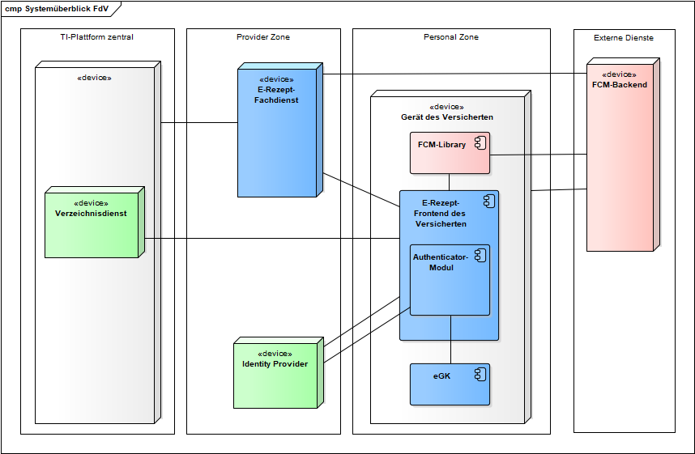

Elektronische Gesundheitskarte und Telematikinfrastruktur
Spezifikation
E-Rezept-Frontend des Versicherten
| Version | 1.5.0 |
| Revision | 571470 |
| Stand | 07.12.2022 |
| Status | freigegeben |
| Klassifizierung | öffentlich |
| Referenzierung | gemSpec_eRp_FdV |
Änderungen zur Vorversion
Anpassungen des vorliegenden Dokumentes im Vergleich zur Vorversion können Sie der nachfolgenden Tabelle entnehmen.
Dokumentenhistorie
| Version |
Stand |
Kap./ Seite |
Grund der Änderung, besondere Hinweise |
Bearbeitung |
|---|---|---|---|---|
| 1.0.0 | 30.06.20 | Erstversion des Dokumentes | gematik | |
| 1.0.1 | 06.07.20 | Aktualisierung Hinweis zu Dispensierinformation | gematik | |
| 1.1.0 | 12.11.20 | Einarbeitung gemäß Änderungsliste P22.2 / Scope-Themen Systemdesign R4.0.1 | gematik | |
| 1.2.0 | 19.02.21 | Einarbeitung gemäß Änderungsliste P22.5 | gematik | |
| 1.3.0 | 07.10.21 | Einarbeitung gemäß Änderungslisten E-Rezept_Maintenance_21.1 und _21.2 |
gematik | |
| 1.4.0 | 09.08.22 | Einarbeitung gemäß Änderungsliste E-Rezept_Maintenance_21.3; Einarbeitung gemF_eRp_WF_LE, gemF_eRp_PKV und gemF_eRp_MVO |
gematik | |
| 1.5.0 | 07.12.22 | Einarbeitung gemäß Änderungsliste E-Rezept_Maintenance_22.3 | gematik |
Die vorliegende Spezifikation definiert die Anforderungen zu Herstellung, Test und Betrieb des Produkttyps E-Rezept-Frontend des Versicherten.
Das Dokument richtet sich den Hersteller (gematik) von Produkten des Produkttypen E-Rezept Frontend des Versicherten, sowie an Hersteller und Anbieter von weiteren Produkttypen der Fachanwendung E-Rezept.
Dieses Dokument enthält normative Festlegungen zur Telematikinfrastruktur des deutschen Gesundheitswesens. Der Gültigkeitszeitraum der vorliegenden Version und deren Anwendung in Zulassungs- oder Abnahmeverfahren wird durch die gematik GmbH in gesonderten Dokumenten (z.B. Dokumentenlandkarte, Produkttypsteckbrief, Leistungsbeschreibung) festgelegt und bekannt gegeben.
Schutzrechts-/Patentrechtshinweis
Die nachfolgende Spezifikation ist von der gematik allein unter technischen Gesichtspunkten erstellt worden. Im Einzelfall kann nicht ausgeschlossen werden, dass die Implementierung der Spezifikation in technische Schutzrechte Dritter eingreift. Es ist allein Sache des Anbieters oder Herstellers, durch geeignete Maßnahmen dafür Sorge zu tragen, dass von ihm aufgrund der Spezifikation angebotene Produkte und/oder Leistungen nicht gegen Schutzrechte Dritter verstoßen und sich ggf. die erforderlichen Erlaubnisse/Lizenzen von den betroffenen Schutzrechtsinhabern einzuholen. Die gematik GmbH übernimmt insofern keinerlei Gewährleistungen.
Die vollständige Anforderungslage für den Produkttyp ergibt sich aus weiteren Konzept- und Spezifikationsdokumenten, diese sind in dem Produkttypsteckbrief des Produkttyps E-Rezept-Frontend des Versicherten verzeichnet.
Diese Spezifikation beschreibt Anforderungen zu den Aspekten Sicherheit, Interoperabilität, Funktionalität und Barrierefreiheit. Die konkrete Ausgestaltung der Benutzeroberfläche (GUI) und der Benutzerführung (UX) werden im Rahmen des agilen Herstellungsprozesses des E-Rezept-FdV erarbeitet.
Anforderungen als Ausdruck normativer Festlegungen werden durch eine eindeutige ID sowie die dem RFC 2119 [RFC2119] entsprechenden, in Großbuchstaben geschriebenen deutschen Schlüsselworte MUSS, DARF NICHT, SOLL, SOLL NICHT, KANN gekennzeichnet.
Sie werden im Dokument wie folgt dargestellt:
<AFO-ID> - <Titel der Afo>
Text / Beschreibung
[<=]
Dabei umfasst die Anforderung sämtliche zwischen Afo-ID und der Textmarke [<=] angeführten Inhalte.
Themen, die noch intern geklärt werden müssen oder eine Entscheidung seitens der Gesellschafter erfordern, sind wie folgt im Dokument gekennzeichnet:
Beispiel für einen offenen Punkt.
Das E-Rezept-Frontend des Versicherten (E-Rezept-FdV) ist eine App für den Versicherten, welche die für die Nutzung der Fachanwendung E-Rezept notwendigen Funktionalitäten bündelt und dezentrale Fachlogik der Fachanwendung E-Rezept ausführt.
Ausführungsumgebung des E-Rezept-FdV ist ein mobiles Gerät des Versicherten (GdV), welches das Betriebssystem Google Android oder Apple iOS verwendet. Es steht unter alleiniger Kontrolle des Versicherten. Dem Versicherten obliegt es, durch geeignete Maßnahmen die Sicherheit der Daten zu stärken.
Im Systemkontext des FdV interagieren verschiedene Akteure (aktive Komponenten) in unterschiedlichen Rollen mit dem FdV.
Tabelle 1: TAB_FdVERP_001 – Akteure und Rollen
| Akteur | Rolle | Beschreibung |
|---|---|---|
| Nutzer des E-Rezept-FdV | Versicherter oder Vertreter eines Versicherten |
Primärer Anwender, Ausführen von fachlichen Anwendungsfällen mit Zugriff auf den E-Rezept-Fachdienst |
| Ausführungsumgebung | Gerät des Versicherten | Betriebs-/Ablaufumgebung des E-Rezept-FdV |
| Hersteller E-Rezept-FdV | Organisatorisch, kein Akteur in der Ausführung von E-Rezept-Anwendungsfällen | Der Hersteller E-Rezept-FdV stellt im Handbuch Informationen bereit bezüglich
|
Die vom E-Rezept-FdV direkt erreichbaren Produkttypen der TI sind

Abbildung 1: ABB_FDVERP_001 Systemüberblick FdV
Identity Provider
Der Identity Provider (IDP) ist ein Nutzerdienst der TI-Plattform, welcher die Authentifizierung von Nutzern und die Bereitstellung bestätigter Identitätsmerkmale der Nutzer als Plattformleistungen bereitstellt. Der IDP bietet außerdem die Möglichkeit, bereits erfolgte Authentifizierungen eines Nutzers im Sinne eines Single Sign-on nachzunutzen.
Authenticator-Modul
Das Authenticator-Modul ist eine logische Komponente im E-Rezept-FdV. Das Authenticator-Modul kapselt funktionale Anteile des Authentifizierungsprozesses und die Kommunikation mit der Smartcard des Nutzers.
Für die Authentisierung mittels eGK greift das E-Rezept-FdV mittels des Funkstandards Near Field Communication (NFC) zur drahtlosen Datenübertragung auf die kontaktlose Schnittstelle auf die eGK zu. Das bedeutet für den Nutzer, dass er sowohl eine NFC-fähige eGK als auch ein NFC-fähiges Endgerät benötigt.
E-Rezept-Fachdienst
Der E-Rezept-Fachdienst ist ein offener fachanwendungsspezifischer Dienst in der TI, welcher die Workflows zu E-Rezepten umsetzt.
Verzeichnisdienst
Der Produkttyp Verzeichnisdienst der TI stellt ein Verzeichnis von Apotheken bereit, bei denen der Versicherte E-Rezepte einlösen kann. Der Versicherte kann für die Suche nach Apotheken bspw. folgende Parameter verwenden: Institutionsname, Straße, Postleitzahl, Ort, Geodaten.
In diesem Kapitel werden übergreifende Anforderungen beschrieben, die sich aus den Themenfeldern Datenschutz und Sicherheit ergeben.
A_20202
Das E-Rezept-FdV MUSS die Nutzung und den Zugriff auf Geräte-Ressourcen und Sensorik auf das für den Betrieb des E-Rezept-FdV notwendige Maß einschränken (beispielsweise ggf. Standortabfrage für Apothekensuche, Kamerazugriff für das Abscannen eines 2D-Codes, Kalenderzugriff für Erinnerungen, Audio- und Mikro-Zugriff für barrierearmen Zugriff). <=
A_20203
Das E-Rezept-FdV MUSS das Erstellen eines Screenshots über die Inhalte der App verhindern. <=
A_19176
Der Hersteller bzw. der Anbieter des E-Rezept-FdV MUSS den Nutzer über die Annahmen und Anforderungen seines Produktes an das Gerät, auf dem das E-Rezept-FdV läuft, sowie über den Bezug des Produkts aus vertrauenswürdigen App Stores informieren. <=
Hinweis: Die Annahmen und Anforderungen sollen insbesondere Hinweise enthalten, mit welchen Maßnahmen der Nutzer sein Gerät sicher gestalten kann.
A_19177
Das E-Rezept-FdV MUSS es den Versicherten ermöglichen, die für die Fachanwendung für ihn erzeugten Protokolleinträge anzeigen zu können. <=
A_19178
Das E-Rezept-FdV MUSS Maßnahmen zum Schutz vor den in der jeweils aktuellen Version genannten OWASP-Mobile-Top-10-Risiken [OWASPMobileTop10] umsetzen. <=
Hinweis: Dies betrifft bspw. die folgenden Aspekte:
Für mobile Anwendungen sind OWASP Top Ten Mobile Controls [OWASP TTMC] zu beachten.
A_19480
Das E-Rezept-FdV DARF Session-Daten (bspw. ACCESS_TOKEN und ID_TOKEN) NICHT an Dritte, außer im Rahmen der in den Anwendungsfällen spezifizierten Kommunikation, weitergeben. <=
A_20184
Das E-Rezept-FdV DARF NICHT Session-Daten (bspw. ACCESS_TOKEN und ID_TOKEN) unverschlüsselt auf permanenten Speichermedien ablegen. <=
A_20185
Das E-Rezept-FdV MUSS die Session nach einem angemessenen Session-Timeout, gemäß aktuellen Best-Practice-Empfehlungen, aktiv beenden. <=
A_20186
Das E-Rezept-FdV MUSS beim Beenden einer Session die Session-Daten (bspw. ACCESS_TOKEN und ID_TOKEN) sicher löschen. <=
A_19179
Das E-Rezept-FdV MUSS sicherstellen, dass die von ihm erzeugten Schlüssel eine ausreichende Qualität besitzen. <=
Für Festlegungen zur Schlüsselerzeugung siehe [gemSpec_Krypt#GS-A_4368].
Um die geforderte Entropie zu erreichen, können Informationen von zusätzlichen Quellen (Internet, Sensoren des Geräts) zusammengeführt werden.
A_19979
Das E-Rezept-FdV DARF Diensten Dritter NICHT Zugriff auf personenbezogene medizinische Daten geben. <=
A_19980
Das E-Rezept-FdV MUSS den Versicherten darauf hinweisen, dass durch die Nutzung von Diensten Dritter Daten an diese abfließen und welche Daten dies sind. <=
Hinweis: Dienste Dritter, an die andere Daten als personenbezogene medizinische Daten weitergeleitet werden können, sind z.B. Kartendienste oder der Arzneimitteldatenbanken. Näheres hierzu regelt die Rechtsverordnung nach § 360 (5) PDSG.
A_19981
Das E-Rezept-FdV MUSS vor einer Weitergabe von Daten an Dienste von Dritten einmalig das Einverständnis des Versicherten einholen (OPT-IN). <=
A_19982
Das E-Rezept-FdV MUSS es dem Versicherten ermöglichen das Einverständnis zur Weitergabe von Daten an Dienste von Dritten zu widerrufen und ihn dabei über eventuelle Einschränkungen in der Funktionalität informieren. <=
Hinweis: Nach dem Widerruf darf das E-Rezept-FdV keine Daten mehr an Dienste von Dritten weitergeben.
A_19983
Das E-Rezept-FdV DARF NICHT Dienste von Dritten nutzen, wenn diese bekannte Schwachstellen besitzen. <=
A_19984
Das E-Rezept-FdV SOLL eingehende Daten von Diensten Dritter validieren. <=
A_19181-01
Das E-Rezept-FdV MUSS bei Konfigurationsmöglichkeiten die Voreinstellung wählen, so dass nur personenbezogene Daten, deren Verarbeitung für den jeweiligen bestimmten Verarbeitungszweck erforderlich ist, verarbeitet werden. <=
A_19182
Das E-Rezept-FdV MUSS Maßnahmen umsetzen, um die Auswirkung von unentdeckten Schwachstellen in benutzten Software-Bibliotheken zu minimieren. <=
Hinweis: Beispielmaßnahmen sind in [OWASP Proactive Control#C2] zu finden. Das gewählte Verfahren muss die gleiche Wirksamkeit aufweisen wie die Kapselung gemäß [OWASP Proactive Control#C2 Punkt 4].
A_19183
Das E-Rezept-FdV MUSS sicherstellen, dass Daten, die vom E-Rezept-Fachdienst in das E-Rezept-FdV geladen werden, nur mit Zustimmung des Versicherten unter Nutzung von expliziten Opt-in-Lösungen weitergeleitet werden können, wobei sich das Opt-In nur genau auf die Weiterleitung beziehen und nicht mit anderen Zustimmungen kombiniert werden darf. <=
Hinweis: Die in A_19183 geforderte Zustimmung kann einmalig durch den Versicherten erteilt werden und bis auf Widerruf des Versicherten für alle Datenweiterleitungen, die von dem Versicherten veranlasst werden, gelten. Das E-Rezept-FdV kann dabei die Möglichkeit einer expliziten Opt-in-Lösung mit Widerrufsrecht oder ein anlassbezogenes Zustimmungsverfahren oder eine Wahlmöglichkeit beider Verfahren vorsehen.
A_19184
Das E-Rezept-FdV MUSS sicherstellen, dass der Versicherte vor der Zustimmung zur Weiterleitung von Daten aus dem E-Rezept-FdV in verständlicher Weise darüber informiert wird, welche Daten weitergeleitet werden. <=
A_19185
Das E-Rezept-FdV MUSS sicherstellen, dass der Versicherte eine Weiterleitung der Daten im Nachhinein nachvollziehen kann (z.B. durch Protokollierung). <=
A_19186
Das E-Rezept-FdV MUSS Daten lokal sicher speichern, so dass keine andere App auf demselben Gerät unbefugt Zugriff auf die Daten hat. Insbesondere MUSS das E-Rezept-FdV Zugriffsschlüssel verschlüsselt ablegen. Außerdem MUSS das E-Rezept-FdV sicherstellen, dass vertrauliche Daten nicht vom Betriebssystem an anderen Ablageorten zwischengespeichert werden. <=
A_19187
Das E-Rezept-FdV DARF NICHT eine Verbindung zum E-Rezept-Fachdienst aufbauen, wenn es keinen ACCESS_TOKEN vom IDP erhalten hat. <=
A_20182
Das E-Rezept-FdV DARF NICHT zusätzliche Funktionalitäten enthalten, die die berufs- oder gewerbsmäßige Zuweisung und das Makeln von E-Rezepten unterstützen oder den Nutzer in seiner Entscheidung beeinflussen, welche elektronischen Verordnungen in welcher Apotheke eingelöst werden. <=
A_20285
Das E-Rezept-FdV MUSS Apotheken wettbewerbsneutral darstellen (bspw. Sortierung nach Alphabet oder Entfernung vom aktuellen Standort des Nutzers). <=
A_19188
Das E-Rezept-FdV MUSS die von ihm verarbeiteten Daten so speichern, dass die Daten bei einer Deinstallation des E-Rezept-FdV mit gelöscht werden. <=
Hinweis: Zu diesen Daten gehören Session-Daten, Cashes, Schlüssel, E-Rezept-Token, E-Rezept-Inhaltsdaten, Nachrichten.
Der Hersteller des E-Rezept-FdV muss die Anforderungen aus dem Abschnitt "Sicherer Softwareentwicklungsprozess" des Dokuments [gemSpec_DS_Hersteller] erfüllen.
Der Hersteller des E-Rezept-FdV muss die Anforderungen aus dem Abschnitt "Unterstützung von Audits" des Dokuments [gemSpec_DS_Hersteller] erfüllen.
Für die Analyse des Nutzerverhaltens (Tracking) bei der Verwendung des Frontends durch den Versicherten gelten die nachfolgend aufgeführten Anforderungen.
A_19086
Das E-Rezept-FdV DARF ein Werbe-Tracking NICHT verwenden. <=
A_19087
Das E-Rezept-FdV KANN ein Usability-Tracking sowie Crash-Reporting verwenden. <=
Hinweis: Die folgenden Anforderungen gelten nur, falls das E-Rezept-FdV ein Usability-Tracking sowie Crash-Reporting vorsieht.
A_19088
Das E-Rezept-FdV DARF ein Usability-Tracking sowie Crash-Reporting NICHT verwenden, ohne dass der Nutzer vorher über die Funktionen informiert wurde und über ein Opt-in-Verfahren eingewilligt hat. <=
A_20187
Das E-Rezept-FdV MUSS es dem Versicherten ermöglichen, die Einwilligung in die Aktivierung eines Usability-Tracking sowie Crash-Reporting zu widerrufen und ihn dabei über die Folgen des Widerrufs informieren. <=
A_19089
Das E-Rezept-FdV MUSS den Versicherten vor der Einwilligung in die Aktivierung Usability-Tracking sowie Crash-Reporting in verständlicher und leicht zugänglicher Form sowie in einer klaren und einfachen Sprache folgende Einwilligungsinformationen anzeigen:
Hinweis: Diese Anforderung ist nicht durch einen alleinigen Verweis auf die AGB oder Nutzungsbedingungen des FdVs erfüllbar. Verständliche Form bedeutet eine kurze, nicht juristische Erklärung zum Zweck des Usability-Tracking sowie Crash-Reporting. Leicht zugängliche Form bedeutet direkt im FdV.
A_19090
Das E-Rezept-FdV MUSS sicherstellen, dass die Einwilligung des Nutzers in die Aktivierung von Usability-Tracking sowie Crash-Reporting erst erfolgt, wenn der Nutzer bestätigt, die angezeigten Einwilligungsinformationen gelesen zu haben. <=
A_19091
Das E-Rezept-FdV MUSS technisch sicherstellen, dass der Benutzer der App maximal einmal eine Abfrage zur Einwilligung in das Usability-Tracking sowie Crash-Reporting angezeigt bekommt. <=
Hinweis: Wenn der Benutzer seine Einwilligung in das Usability-Tracking sowie Crash-Reporting nicht erteilt, darf das E-Rezept-FdV den Nutzer nicht solange nach seiner Einwilligung fragen, bis der Nutzer diese erteilt.
A_19092
Das E-Rezept-FdV DARF die Nutzung E-Rezept-FdV NICHT an die Aktivierung des Usability-Tracking sowie Crash-Reporting koppeln. <=
Hinweis: Das E-Rezept-FdV muss auch ohne aktiviertes Usability-Tracking sowie Crash-Reporting vollständig funktional nutzbar sein.
A_19093
Das E-Rezept-FdV MUSS sicherstellen, dass die Informationen zu Usability-Tracking sowie Crash-Reporting keine Daten enthalten, die natürliche Personen direkt identifizieren. <=
Hinweis: Personenbezogene Daten mit direktem Personenbezug sind bspw. Namen von natürlichen Personen, Geräte-IDs, Nutzerkennungen oder ein „Fingerabdruck“ auf Basis von Geräteeigenschaften und Einstellungen.
A_19094
Das E-Rezept-FdV MUSS sicherstellen, dass in den übermittelten Informationen zu Usability-Tracking sowie Crash-Reporting keine Sicherheitsmerkmale enthalten sind. <=
Hinweis: Sicherheitsmerkmale sind z.B. geheime oder private Schlüssel, Authentifizierungs- oder Autorisierungsbestätigungen.
A_19095
Das E-Rezept-FdV MUSS beim Start einer Nutzersession die Nutzersession-ID zufällig neu generieren. <=
Hinweis: Für die Güte des Zufalls gilt die entsprechende Anforderung aus [gemSpec_Krypt].
A_19096
Falls das E-Rezept-FdV ein Session-übergreifendes Tracking umsetzt, MUSS das E-Rezept-FdV technisch sicherstellen, dass pseudonyme Identifier neu generiert werden können. <=
A_19097
Das E-Rezept-FdV MUSS technisch sicherstellen, dass aktiviertes Usability-Tracking sowie Crash-Reporting jederzeit durch den Nutzer des FdVs deaktiviert werden können. <=
A_19098
Der Hersteller bzw. der Anbieter des E-Rezept-FdV MUSS die Verarbeitung und Auswertung der gesammelten Informationen zu Usability-Tracking sowie Crash-Reporting selbst durchführen und darf diese nicht von einem Drittanbieter durchführen lassen. <=
A_19099
Der Hersteller bzw. der Anbieter des E-Rezept-FdV DARF die gesammelten Informationen zu Usability-Tracking sowie Crash-Reporting NICHT für eine Profilbildung verwenden. <=
Die Benutzeroberfläche, welche durch den Versicherten genutzt wird, um E-Rezept-Anwendungsfälle auszuführen, ist Teil des E-Rezept-FdVs.
Die folgenden Ausführungen zu Anforderungen an die visuelle Darstellung und Benutzerführung / Benutzerfreundlichkeit sind normativ.
Für die visuelle Darstellung der Inhalte ist eine grafische Benutzeroberfläche erforderlich, welche die E-Rezept-Daten des Versicherten strukturiert und übersichtlich darstellt.
Das E-Rezept-FdV soll eine einheitlich gestaltete Oberfläche zur Benutzerführung besitzen, um die Übersichtlichkeit in allen Anwendungsfällen für den Nutzer zu gewährleisten. Es soll Menüfunktionen, Texte und andere Anzeigen eindeutig, verständlich und widerspruchsfrei benennen bzw. darstellen.
Das E-Rezept-FdV soll es dem Nutzer ermöglichen, zu jeder Zeit zu erkennen, in welchem E-Rezept-Anwendungsfall sich die Applikation gerade befindet.
Eine hohe Akzeptanz der Benutzerfreundlichkeit oder Usability wird durch eine einfache, selbsterklärende Bedienung der Oberfläche erreicht, die sich an gängigen Mustern des App-Designs orientiert.
Hierfür ist es auch erforderlich, die Erwartungshaltung der Zielgruppe zu kennen und zu berücksichtigen (z.B. auch Menschen mit körperlichen oder geistigen Einschränkungen).
Die Akzeptanz des Frontends für den Versicherten hängt in großem Maße von folgenden Faktoren ab:
| Die Entwicklung einer barrierearmen Anwendung unterliegt einem sich fortlaufend weiterentwickelnden Prozess. Die Umsetzung aller Anforderungen kann nicht mit der Ersteinführung der Anwendung sichergestellt werden. |
Zusätzlich zu den in diesem Kapitel aufgeführten Anforderungen zur Benutzerführung sollen auch die in der ISO 9241 aufgeführten Qualitätsrichtlinien zur Sicherstellung der Ergonomie interaktiver Systeme und Anforderungen aus der Verordnung zur Schaffung barrierefreier Informationstechnik nach dem Behindertengleichstellungsgesetz (Barrierefreie-Informationstechnik-Verordnung – BITV 2.0) beachtet werden.
DIN EN ISO 9241 – Teile mit Bezug zur Software-Ergonomie
Insbesondere sollen die nachfolgend aufgeführten Teile der ISO 9241 berücksichtigt werden:
Für die Entwicklung eines barrierefreien E-Rezept-FdVs ist insbesondere die Verordnung zur barrierefreien Gestaltung von Informationstechnik zu beachten.
BITV 2.0 - Barrierefreie Informationstechnik-Verordnung
Hinweis: Die Versionsnummern der aufgeführten Normen und Richtlinien spiegeln den Stand zum Zeitpunkt der Erstellung dieses Dokumentes wider.
Die seit 2018 bestehende umfassende Forderung nach Umsetzung von Barrierefreiheit in der Informationstechnik erwächst aus der EU Richtlinie 2016/2102 zur „Barrierefreiheit von Webseiten und mobiler Anwendungen öffentlicher Stellen“. Diese Richtlinie musste im Jahr 2018 in Bundes- und Landesrecht übertragen werden. – Diese Gesetze verweisen jeweils auf die Barrierefreie Informationstechnik-Verordnung mit Ausgabe vom 21. Mai 2019 (BITV 2.0).
Zur Erfüllung der BITV 2.0 § 3 Abs. 2 ist die durch die Veröffentlichung im europäischen Amtsblatt harmonisierte EN 301549 „Barrierefreiheitsanforderungen für IKT-Produkte und -Dienstleistungen“ (V 2.1.2 von 2018-08) anzuwenden. Diese liegt in der Fassung von 2020-02 als DIN EN 301549 als deutsche Übersetzung vor. Die DIN EN 301549 ist eine Beschaffungsnorm. Die darin aufgeführten und für den Anwendungsfall des FdV des E-Rezepts anzuwendenden Erfolgskriterien sind in Kapitel 9 (Web mit 50 Erfolgskriterien), Kapitel 10 (Dokumente mit 46 Erfolgskriterien) und Kapitel 11 (Nicht webbasierte Software mit 44 Erfolgskriterien) aufgeführt. Sie entsprechen den Erfolgskriterien von Level AA der 2.1. WCAG 2.1 (Web Content Accessibility Guidelines).
Der sachliche Geltungsbereich der BITV 2.0 umfasst folgende relevanten Anwendungsbereiche für diese Spezifikation:
Folgende Gestaltungsmerkmale der Anwendungen stellen die Barrierefreiheit sicher:
In den genannten Normen und Standards werden nebeneinander die Belange von in der Handmotorik eingeschränkter, blinder, sehbehinderter, gehörloser, schwerhöriger, geistig und lernbehinderter Menschen berücksichtigt.
Nach BITV 2.0 müssen Dokumente, die über dem FdV angezeigt werden, die gleichen Anforderungen an die Barrierefreiheit erfüllen, wie sie an die Anwendung gestellt werden. Sämtliche bereitgestellten Dokumente müssen als barrierefreie Formate angeboten werden, die mit dem Screenreader lesbar und navigierbar sind. Hierbei müssen die behinderungsspezifischen Standardsoftwares zur Herstellung von Zugänglichkeit berücksichtigt werden.
Allgemeine Anforderungen an die Benutzerfreundlichkeit
A_19074
Die Bedienung des E-Rezept-FdV SOLL für den Nutzer intuitiv gestaltet werden. <=
A_19075
Das E-Rezept-FdV SOLL dem Nutzer alle anzeigbaren Texte in den Sprachen Deutsch, Türkisch, Russisch, Polnisch, Arabisch und Englisch bereitstellen. <=
Zusätzliche Sprachen können unterstützt werden.
A_19077
Das E-Rezept-FdV MUSS es dem Nutzer ermöglichen, Anwendungsfälle auch vor dem Ende der Verarbeitung jederzeit abzubrechen. <=
A_19085
Die E-Rezept-FdV SOLL dem Nutzer anzeigen, welche Arten von Dokumentenzugriffen und Verwaltungsfunktionen ausgeführt werden können. <=
A_19084
Das E-Rezept-FdV MUSS für die Inhalte und Anwendungsfälle eindeutige und verständliche Bezeichnungen verwenden. <=
Bezeichnungen sollen nach Möglichkeit vollständig ausgeschrieben sein, Abkürzungen sind zu vermeiden.
A_19078
Das E-Rezept-FdV SOLL sicherstellen, dass bereitgestellte Inhalte maschinenlesbar und navigierbar sind, um dem Nutzer eine barrierefreie Bedienung zu ermöglichen. <=
A_20193
Das E-Rezept-FdV DARF NICHT gerätespezifische Funktionalitäten (z.B. Lagebestimmung, Kamerafunktion, Multi-Touch-Gesten) nutzen, wenn sie nicht für die Anwendung erforderlich sind. <=
A_19079
Das E-Rezept-FdV SOLL gerätespezifische Funktionalitäten (z.B. Lagebestimmung, Kamerafunktion, Multi-Touch-Gesten) sinnvoll nutzen und unterstützen. <=
A_20194
Das E-Rezept-FdV MUSS den Nutzer über die Verwendung der gerätespezifischen Funktionalitäten (z.B. Lagebestimmung, Kamerafunktion, Multi-Touch-Gesten) informieren. <=
A_20205
Das E-Rezept-FdV MUSS es dem Nutzer ermöglichen, die Verwendung von gerätespezifischen Funktionalitäten (z.B. Lagebestimmung, Kamerafunktion, Multi-Touch-Gesten) jederzeit deaktivieren zu können. <=
A_19080
Das E-Rezept-FdV SOLL die Schnittstellen für die Unterstützung der barrierefreien Bedienungsmöglichkeit, welche vom Betriebssystem zur Verfügung gestellt werden, nutzen. <=
A_19081
Das E-Rezept-FdV SOLL die Bedienhilfen der verwendeten Betriebssysteme zur barrierefreien Nutzung verwenden. <=
A_19082
Das E-Rezept-FdV SOLL für das GUI ein Kontrastverhältnis verwenden, welches unter verschiedenen Bedingungen eine optimale Ablesbarkeit gewährleistet. <=
A_19083
Das E-Rezept-FdV SOLL dem Nutzer Hinweise anzeigen, die den Zweck sowie den inhaltlichen Ablauf eines Anwendungsfalls betreffen, um dem Nutzer die Bedienung zu vereinfachen. <=
Im Hinweistext können die einzelnen Schritte des Anwendungsfalls sowie die Auswirkungen auf die Nutzung der Anwendung im Rahmen der Versorgung beschrieben sein.
A_21724
Das E-Rezept-FdV MUSS den Nutzer bei der Einsicht in ein E-Rezept mit dem Flowtype 169 darauf hinweisen, dass bei diesem Vorgang seine Verwaltungsmöglichkeiten beschränkt sind. <=
Ist ein Anwendungsfall durchgeführt worden, muss das E-Rezept-FdV das Ergebnis für den Versicherten klar verständlich anzeigen, z.B. "Das ausgewählte E-Rezept wurde gelöscht.".
Ist ein Anwendungsfall durch den Versicherten abgebrochen worden oder technisch nicht durchführbar, muss der Versicherte ebenfalls einen für ihn verständlichen Hinweis erhalten. In jedem Fall muss das Ergebnis für den Versicherten klar erkennbar sein.
Für die Anzeige in Fehlerfällen siehe Kapitel .
Zur Sicherstellung, dass keine Daten versehentlich gelöscht werden, soll der Nutzer nach der Auswahl der Löschen-Funktion darauf hingewiesen werden, dass es sich hierbei um eine unwiderrufliche Aktion handelt.
Um die Usability und somit die Akzeptanz des E-Rezept-FdV durch den Nutzer zu gewährleisten bzw. zu erhöhen, soll das E-Rezept-FdV während des Entwicklungsprozesses iterativ von Nutzern qualitativ getestet werden.
Hierbei sollten sowohl die verschiedenen Nutzergruppen als auch die unterschiedlichen Umgebungen berücksichtigt werden (z.B. mobiler Einsatz).
Im Folgenden sind Konfigurationsparameter beschrieben, deren Werte für die Nutzung der Schnittstellen benötigt werden. Darüber hinaus kann der Hersteller des E-Rezept-FdV zusätzliche Konfigurationsparameter definieren.
A_19574-01
Das E-Rezept-FdV MUSS die Parameter aus TAB_FdVERP_002 persistent speichern und bei der Initialisierung laden.
Tabelle 2 : TAB_FdVERP_002 – Konfigurationsparameter
| Parameter |
Beschreibung | Wertebereich (Default Wert) |
|---|---|---|
| Automatisches TI-Login | Wahlmöglichkeit, ob beim Start des E-Rezept-FdV ein Login (TI-Session starten) erfolgen soll. Alternativ kann das E-Rezept-FdV ohne Verbindung zur TI eingeschränkt auch offline genutzt werden. | ja/nein Default: nein |
| Authentisierungsarten für Zugriffsschutz | Wahlmöglichkeit, ob der Zugriffsschutz verwendet wird und welche Authentisierungsart für den Zugriffsschutzes angewandt wird | kein Zugriffschutz / PIN / biometrische Faktoren (Fingerabdruck, Face-ID) / Online-Authentisierung mittels eGK Default: Online-Authentisierung mittels eGK |
| PIN für Zugriffsschutz | falls die Authentisierungsart PIN für den Zugriffsschutz gewählt wurde | |
| Zugriffsschutz nach Inaktivität | Wahlmöglichkeit, ab wann der Zugriffsschutz nach Inaktivität aktiviert wird. | 30 Sekunden, 1 bis 5 Minuten, Nie Default: 5 Minuten |
| Stammapotheke (>=5) | Vom Nutzer als Stammapotheke markierte Suchergebnisse im Anwendungsfall "Apotheke zur Einlösen eines E-Rezepts suchen" | Bezeichnung der Apotheke, Adresse, Telematik-ID |
| Usability Tracking | falls Usability Tracking durch die E-Rezept-AdV unterstützt werden kann: Wahlmöglichkeit, ob der Nutzer Usability Tracking unterstützen möchte |
ja/nein Default: nein |
| Crash Reporting | falls Crash Reporting durch die E-Rezept-AdV unterstützt werden kann: Wahlmöglichkeit, ob der Nutzer Crash Reporting unterstützen möchte |
ja/nein Default: nein |
| Vertreterliste | Liste der gespeicherten Vertreter für die Vertreterkommunikation | Name + KVNR des Vertreters |
A_20051
Das E-Rezept-FdV MUSS es dem Nutzer ermöglichen, die Parameter aus TAB_FdVERP_002 zu verwalten (anzeigen, ändern, löschen). <=
Das E-Rezept-FdV kann Protokolldateien schreiben, die eine Analyse technischer Vorgänge erlauben. Diese Protokolldateien sind dafür vorgesehen, aufgetretene Fehler zu identifizieren, die Performance zu analysieren und interne Abläufe zu beobachten.
Ein Logging des E-Rezept-FdV auf Geräten des Versicherten ist im Betrieb nicht vorgesehen, da die Protokolldaten zur Auswertung nicht erreichbar sind. Die Protokollierung auf einem externen Dienst ermöglicht eine Auswertung und kann die Fehlersuche unterstützen (siehe Usability Tracking und CrashReporting). Für Testzwecke soll ein Logging zur Fehleranalyse möglich sein.
A_19682
Das E-Rezept-FdV MUSS für den Betrieb auf dem Gerät des Versicherten das Logging deaktiviert haben. <=
Eine App-Session bezeichnet die Nutzung des E-Rezept-FdV vom Start der App bis zum Beenden der App. Eine Authentisierung gegenüber der TI nach dem Start der App-Session erfolgt nicht zwangsläufig.
Eine TI-Session bezeichnet den Zeitraum von der Authentisierung gegenüber der TI bis zum Ablauf der Authentisierung.
Die Authentisierung gegenüber der TI erfolgt über das Authentisierungsmodul, welche als eigenständige Komponente ebenfalls auf dem GdV installiert ist. Das Authentisierungsmodul unterstützt in der ersten Stufe eine Authentisierung des Versicherten mit der eGK , wobei der Versicherte die PIN eingeben muss. In den weiteren Ausbaustufen werden alternative Authentisierungsverfahren ermöglicht.
Der Versicherte weist sich gegenüber der TI mit der Identität der eGK mittels NFC (Near Field Communication) aus. Für die Authentisierung wird sowohl eine NFC-fähige eGK als auch ein NFC-fähiges Endgerät benötigt.
Die Authentisierung des Nutzers erfolgt mittels eGK und MRPIN.home. Für den Zugriff auf die kontaktlose Schnittstelle der eGK muss zusätzlich die CAN eingegeben werden, sofern der Nutzer die CAN nicht zuvor im FdV gespeichert hat.
Alternativ kann der Nutzer das E-Rezept-FdV auch offline ohne Authentisierung gegenüber der TI mit Einschränkungen nutzen. Dies kann z.B. der Fall sein, wenn der Nutzer dies nicht wünscht oder keine NFC-fähige eGK vorliegt oder das verwendete Endgerät nicht NFC-kompatibel ist.
Die Authentisierungsdauer einer TI-Session beträgt maximal 12 Stunden ab dem Zeitpunkt der Erstellung des Authentisierungstokens. Wird die App durch den Nutzer aktiv beendet, werden die Session-Daten gelöscht und eine erneute Authentisierung wird erforderlich (siehe Abschnitt "TI-Session beenden")
A_19540
Das E-Rezept-FdV SOLL beim erstmaligen Start nach der Installation der App den Anwendungsfall "TI-Session starten" starten. <=
A_19725
Das E-Rezept-FdV MUSS den in den Konfigurationseinstellungen eingestellten Zugriffsschutz der App aktivieren, wenn diese nicht mehr im Fokus ist und sich im Hintergrund befindet. <=
A_19541
Das E-Rezept-FdV MUSS den eingestellten Zugriffsschutz der App aktivieren, wenn der Nutzer für die in den Konfigurationseinstellungen festgelegten Zeitdauer inaktiv war. <=
A_19572
Das E-Rezept-FdV MUSS den Anwendungsfall "TI-Session starten" automatisch nach dem Anwendungsfall "App-Session starten" ausführen, wenn das automatische TI-Login in den Konfigurationseinstellungen aktiviert ist. <=
Das E-Rezept-FdV nutzt TLS-Verbindungen für die Kommunikation zu den Diensten der TI. Es verbindet sich mit dem E-Rezept-Fachdienst, einem Identity Provider und dem Verzeichnisdienst.
A_19438-01
Das E-Rezept-FdV MUSS für die Kommunikation mit dem E-Rezept-Fachdienst die vom E-Rezept-Fachdienst im Internet bereitgestellten Schnittstellen nutzen. <=
Für die URLs der Schnittstellen siehe [gemSpec_FD_eRP#A_21782-*].
A_19747
Das E-Rezept-FdV MUSS die URL für die Kommunikation mit dem E-Rezept-Fachdienst gemäß https://<FQDN aus DNS Lookup>:443/<path> bilden. <=
A_20067-01
Das E-Rezept-FdV MUSS als Endpunkt für die Kommunikation mit dem Verzeichnisdienst die URL https://directory.zentral.erp.splitdns.ti-dienste.de nutzen. <=
Die Informationen zu den Endpunkten des Identity Providers ermittelt das E-Rezept-FdV aus dem Discovery Document. Siehe auch [ gemSpec_IDP_Frontend#A_20512 - Regelmäßiges Einlesen des Discovery Document ]. Das Discovery Document ist vom IDP-Dienst unter der URL /.well-known/openid-configuration abrufbar.
A_19215
Das E-Rezept-FdV MUSS mit den Diensten der TI ausschließlich über TLS kommunizieren. <=
A_20206
Das E-Rezept-FdV SOLL mit den Diensten Dritter ausschließlich über TLS kommunizieren. <=
A_20206-01
Das E-Rezept-FdV MUSS mit den Diensten Dritter ausschließlich über TLS kommunizieren. <=
A_19216
Das E-Rezept-FdV MUSS bei jedem Verbindungsaufbau den Dienst der TI anhand seines TLS-Zertifikats authentifizieren und MUSS die Verbindungen ablehnen, falls die Authentifizierung fehlschlägt. <=
A_20014-01
Das E-Rezept-FdV MUSS in alle HTTP-Requests an Dienste der TI im äußeren Http-Request den HTTP-Header user-agent gemäß [RFC7231] mit
<Produktname>/<Produktversion> <Herstellername>/<client_id> gemäß der Produktidentifikation befüllen:
Für Informationen zur Produktidentifikation siehe [gemSpec_OM].
A_21553
Der Hersteller des E-Rezept-FdV MUSS organisatorische Prozesse für API-KEYs für die Kommunikation zum E-Rezept-Fachdienst unterstützen. <=
A_21554
Das E-Rezept-FdV MUSS den von der gematik vergebenen API-KEY im E-Rezept-FdV verwahren. <=
Der Wechsel des API-KEY erfolgt mit einer neuen Version des E-Rezept-FdV.
A_21555
Das E-Rezept-FdV MUSS in allen HTTP-Requests an den E-Rezept-Fachdienst im äußeren HTTP-Request den HTTP-Header "X-api-key" mit dem von der gematik übermittelten API-KEY befüllen. <=
Der HTTP-Header X-api-key wird im äußeren HTTP-Request, d.h. außerhalb der Verschlüsselung des VAU-Transports, gesendet.
A_21567
Das E-Rezept-FdV MUSS in alle Anfragen an den E-Rezept-Fachdienst im äußeren HTTP-Request den HTTP-Header "X-erp-user" mit dem Wert "v" einfügen. <=
A_21570
Das E-Rezept-FdV MUSS in alle Anfragen an den E-Rezept-Fachdienst im äußeren HTTP-Request den HTTP-Header "X-erp-resource" mit dem Wert gemäß der angefragten Ressource im FHIR-Request einfügen. <=
Tabelle 3 : TAB_FdVERP_019 - HTTP-Header "X-erp-resource"
| Operation |
X-erp-resource |
|---|---|
| DELETE /Communication/<id> |
Communication |
| GET /AuditEvent/ |
AuditEvent |
| GET /AuditEvent/<id> |
AuditEvent |
| GET /Communication/ |
Communication |
| GET /Communication/<id> |
Communication |
| GET /Device/ |
Device |
| GET /MedicationDispense/ |
MedicationDispense |
| GET /MedicationDispense/<id> |
MedicationDispense |
| GET /metadata/ |
metadata |
| GET /Task/ |
Task |
| GET /Task/<id> |
Task |
| POST /Communication |
Communication |
| POST /Task/<id>/$abort |
Task |
| DELETE /Consent/ | Consent |
| GET /Consent/ | Consent |
| POST /Consent/ | Consent |
| DELETE /ChargeItem/<id> | ChargeItem |
| GET /ChargeItem/ | ChargeItem |
| GET /ChargeItem/<id> | ChargeItem |
| PATCH /ChargeItem/<id> | ChargeItem |
Der Nutzer authentisiert sich für Zugriffe auf Dienste der TI gegenüber der TI. Das E-Rezept-FdV erhält bei erfolgreicher Authentisierung einen Authentisierungstoken (ACCESS_TOKEN), welcher für die Authentisierung bei den Diensten der TI weitergeleitet wird.
A_20167
Das E-Rezept-FdV MUSS für den Zugriff auf Dienste der TI, wenn kein gültiger ACCESS_TOKEN vorliegt, sich gegenüber einem Identity Provider der TI in den Rollen Authenticator-Modul und Anwendungsfrontend Applikation authentisieren. <=
Für Informationen zum Ablauf der Authentisierung siehe [gemSpec_IDP_Dienst] und [gemSpec_IDP_Frontend].
Der Nutzer kann einen Schutz für den Zugriff konfigurieren. Hierbei sind verschiedene Authentisierungsarten zulässig. Für die Authentisierungsart Online-Authentisierung
A_20172
Das E-Rezept-FdV MUSS für die Umsetzung der Online-Authentisierung für den Zugriffsschutz des E-Rezept-FdV eine Authentisierung gegenüber einen Identity Provider der TI durchführen. <=
Bei erfolgreicher Authentisierung erhält das E-Rezept-FdV einen verschlüsselten ACCESS_TOKEN. Das E-Rezept-FdV kann diesen ACCESS_TOKEN nicht entschlüsseln und somit nicht auswerten. Daher wird der HTTP-Response 200 als Ergebnis einer erfolgreichen Authentisierung gewertet.
Bei erfolgreicher Authentisierung werden folgende Funktionen ermöglicht:
Die Kommunikation zum E-Rezept-Fachdienst wird zusätzlich zu TLS über einen sicheren Kanal zwischen dem E-Rezept-FdV und der Vertrauenswürdigen Ausführungsumgebung (VAU) im E-Rezept-Fachdienst gesichert.
A_19740-01
Das E-Rezept-FdV MUSS für alle Anfragen an den E-Rezept-Fachdienst für
Für Informationen zum Kommunikationsprotokoll zwischen E-Rezept-FdV und der VAU des E-Rezept-Fachdienstes siehe und .
Das E-Rezept-FdV verwendet bei den in TAB_FdVERP_017 dargestellten Aktivitäten Zertifikate.
Tabelle 4 TAB_FdVERP_017 – Zertifikatsnutzung
| Aktivität |
Zertifikat der TI |
Zertifikatstyp |
Rollen-OID |
Nutzung |
|---|---|---|---|---|
| TLS-Verbindungsaufbau zum E-Rezept-Fachdienst |
nein |
TLS Internet Zertifikat |
n/a |
aktiv |
| TLS-Verbindungsaufbau zum Apothekenverzeichnis der TI | nein | TLS Internet Zertifikat | n/a | aktiv |
| TLS-Verbindungsaufbau zum IDP | nein | TLS Internet Zertifikat | n/a | aktiv |
| Aufbau sicherer Kanal zur VAU des E-Rezept-Fachdienstes |
ja |
C.FD.ENC |
oid_erp-vau |
aktiv |
| Signaturzertifikat Fachdienst | ja | C.FD.SIG | oid_erezept | aktiv |
Es gelten folgende übergreifende Festlegungen für die Prüfung aktiv durch das E-Rezept-FdV genutzter Zertifikate.
A_19739
Das E-Rezept-FdV MUSS alle Zertifikate, die es aktiv verwendet (bspw. TLS-Verbindungsaufbau), auf Integrität und Authentizität prüfen. Falls die Prüfung kein positives Ergebnis ("gültig") liefert, so MUSS es die von dem Zertifikat und den darin enthaltenen Attributen (bspw. öffentliche Schlüssel) abhängenden Arbeitsabläufe ablehnen.
Das E-Rezept-FdV MUSS alle öffentlichen Schlüssel, die es verwenden will, auf eine positiv verlaufene Zertifikatsprüfung zurückführen können. <=
"Ein Zertifikat aktiv verwenden" bedeutet im Sinne von A_19739, dass ein E-Rezept-FdV einen dort aufgeführten öffentlichen Schlüssel innerhalb einer kryptografischen Operation (Signaturprüfung, Verschlüsselung, Signaturprüfung von öffentlichen (EC)DH-Schlüsseln etc.) nutzt. Erhält ein E-Rezept-FdV bspw. einen Access-Token, in dem Signaturen und Zertifikate enthalten sind und behandelt es diesen Token als opakes Datenobjekt, ohne die Zertifikate darin gesondert zu betrachten, dann verwendet das E-Rezept-FdV diese Zertifikate im Sinne von A_19739 passiv.
Der E-Rezept-Fachdienst stellt neben der TSL eine zweite Lösung bereit, im E-Rezept-FdV einen Vertrauensraum auf Basis eines Root-CA-Zertifikats aufzubauen. Diese Lösung besteht in einer JSON-Struktur, die eine Zertifikatskette (CA-Zertifikate, Cross-Zertifikate) hin zur dem E-Rezept-FdV bekannten Root-CA enthält. Die JSON-Struktur ist einfacher zu verarbeiten. Die Anforderungen und Schritte zum Aufbau dieser vertrauenswürdigen Zertifikatskette finden sich in der Spezifikation [gemSpec_Krypt] in Abschnitt 7.2.2 "Client-seitige Prüfung der E-Rezept-VAU-Identität".
Die Prüfung von Zertifikaten der TI erfolgt gemäß [gemSpec_Krypt#A_21218].
Folgende Vorgaben gelten für die Prüfung von Internet-Zertifikaten.
A_20033
Das E-Rezept-FdV MUSS für die Prüfung des internetseitigen Zertifikats von Diensten der TI das Zertifikat auf ein CA-Zertifikat einer CA, die die "CA/Browser Forum Baseline Requirements for the Issuance and Management of Publicly-Trusted Certificates" (https://cabforum.org/baseline-requirements-documents/) erfüllt, kryptographisch (Signaturprüfung) zurückführen können. Ansonsten MUSS es das Zertifikat als "ungültig" bewerten.
Das E-Rezept-FdV MUSS die zeitliche Gültigkeit des Zertifikats prüfen. Falls diese Prüfung negativ ausfällt, muss es das Zertifikat als "ungültig" bewerten. <=
Hinweis: Der erste Teil von A_20033 ist gleichbedeutend damit, dass das CA-Zertifikat im Zertifikats-Truststore eines aktuellen Webbrowsers ist.
Um dem Versicherten die Möglichkeit zu geben, ein E-Rezept-Token an Vertreter ohne Zugang zum E-Rezept-Fachdienst weitergeben zu können, ist es hilfreich, das E-Rezept-Token über Drittanwendungen mit einem Vertreter zu teilen. Dies setzt auf die etablierten Kommunikationskanäle zwischen Versichertem und seinem Vertreter auf (z.B. Messenger, E-Mail).
A_20239
Das E-Rezept-Frontend des Versicherten KANN einen E-Rezept-Token aus Drittanwendungen importieren und in Drittanwendungen exportieren. <=
Der Export kann bspw. durch das Weiterleiten mittels eines Messenger-Dienstes oder E-Mail erfolgen. Beim Export sind datenschutzrechtliche Anforderungen zu beachten. Näheres hierzu regelt die Rechtsverordnung nach § 360 Abs. 5 PDSG.
In diesem Kapitel wird die Umsetzung der im systemspezifischen Konzept [gemSysL_eRp] spezifizierten Anwendungsfälle im E-Rezept-FdV beschrieben.
Tabelle 5 : TAB_FdVERP_003 – Übersicht Anwendungsfälle E-Rezept-FdV
| Anwendungsfall | Kommunikation zu Diensten der TI |
|---|---|
| App-Session starten | nein |
| TI-Session starten | ja |
| App-Session beenden | nein |
| TI-Session beenden | ja |
| E-Rezept empfangen | ja |
| E-Rezept anzeigen | nein |
| 2D-Code einscannen | nein |
| E-Rezepte im E-Rezept-Fachdienst löschen | ja |
| E-Rezepte lokal im E-Rezept-FdV löschen | nein |
| Verfügbarkeit von per E-Rezept verordneter Medikamente bei einer Apotheke erfragen | ja |
| E-Rezept einer Apotheke über die TI zuweisen | ja |
| E-Rezept-Token als 2D-Code anzeigen | nein |
| Apotheke suchen | ja |
| Nachricht von Apotheke anzeigen | ja |
| Abgabeinformationen anzeigen | ja |
| Protokolldaten anzeigen | ja |
Das E-Rezept-FdV kann ohne Verbindung zur TI (App-Session ohne TI-Session) oder mit Verbindung zur TI (App-Session mit TI-Session) benutzt werden. Um mit den Diensten der TI zu kommunizieren, muss sich der Versicherte gegenüber der TI authentifizieren.
| Die in diesem Kapitel aufgeführten User Stories schildern die Absichten des Nutzers in Verbindung mit dem E-Rezept-FdV und dienen als Lesehilfe zu den fachlichen Anwendungsfällen. Die User Stories erheben keinen Anspruch auf Vollständigkeit. |
A_19443
Das E-Rezept-FdV MUSS es dem Nutzer ermöglichen, die in "TAB_FdVERP_003 – Übersicht Anwendungsfälle E-Rezept-FdV" beschriebenen Anwendungsfälle auszuführen. <=
User Stories:
Mit diesem Anwendungsfall wird die App-Session im E-Rezept-FdV durch den Nutzer gestartet.
Der Nutzer kann festlegen, ob er das E-Rezept-FdV gegen unbefugten Zugriff sichert oder nicht. Für den Schutz kann er zwischen folgenden Authentisierungsarten wählen:
oder mit geringerem Sicherheitsniveau
Zur Festlegung einer Authentisierung mit niedrigerem Sicherheitsniveau oder dem Abschalten der Authentisierung für den Zugriffsschutz wird - außer bei der ersten Nutzung des E-Rezept-FdV - eine TI-Authentisierung benötigt. In E-Rezept Stufe 1 erfolgt diese Authentisierung mittels eGK und MRPIN.home.
A_20008
Das E-Rezept-FdV SOLL dem Nutzer die verfügbaren Authentisierungsarten in verständlicher Form darstellen und erklärende Hinweise zur Verfügung stellen. <=
A_19485
Das E-Rezept-FdV MUSS dem Nutzer die Möglichkeit bieten, die Authentisierung gegenüber der E-Rezept-FdV in den Konfigurationseinstellungen ein- oder auszuschalten . <=
A_19484
Das E-Rezept-FdV MUSS dem Nutzer ermöglichen, sich mittels eines geeigneten technischen Verfahrens, das zur Authentifizierung einen hohen Sicherheitsstandard gewährleistet, für die Konfiguration einer Authentisierungsart mit geringerem Sicherheitsniveau zu authentisieren. <=
Die Authentisierung erfolgt gemäß der Aktivität "Authentisierung des Nutzers für Zugriff auf das E-Rezept-FdV".
A_19563
Das E-Rezept-FdV MUSS es dem Nutzer ermöglichen, die alternative Authentisierungsarten PIN, Fingerabdruck und Face-ID, soweit sie vom GdV unterstützt werden, zu nutzen. <=
A_19952
Das E-Rezept-FdV MUSS den Anwendungsfall "App-Session starten" gemäß TAB_FdVERP_005 umsetzen.
Tabelle 6 : TAB_FdVERP_005 – App-Session starten
| Name | App-Session starten |
| Auslöser |
|
| Akteur | Versicherter, Vertreter |
| Vorbedingung |
|
| Nachbedingung |
|
| Standardablauf |
|
| Variante 1 | Beim erstmaligen Start des E-Rezept-FdV entfällt der Zugriffsschutz. |
| Variante 2 | Falls Zugriffsschutz aktiviert und eine alternative Authentisierungsart eingerichtet ist, wird diese alternative Authentisierung durchgeführt. |
User Stories:
Der Start der TI-Session erfolgt mit der Authentisierung gegenüber der TI.
Die Authentisierung gegenüber der TI erfolgt
A_19472
Das E-Rezept-FdV MUSS, falls das automatische TI-Login in den Konfigurationseinstellungen aktiviert ist, nach Start der App-Session die TI-Session starten. <=
A_20117
Das E-Rezept-FdV MUSS, falls für den Aufruf des E-Rezept-Fachdienstes kein gültiger ACCESS_TOKEN sowie kein gültiger ACCESS_CODE vorliegt, die TI-Session starten. <=
A_20035
Das E-Rezept-FdV MUSS zum Start der TI-Session die Aktivität "Authentisierung des Nutzers gegenüber TI" ausführen. <=
Mit diesem Anwendungsfall kann der Nutzer die App-Session aktiv beenden.
Wird die App-Session beendet, wird auch die TI-Session beendet, da der Authentisierungs-Token gelöscht wird.
Die App-Session wird beendet, indem der Nutzer das E-Rezept-FdV aktiv beendet, d.h. die App läuft nicht mehr im Hintergrund weiter. Verliert die App den Fokus und läuft im Hintergrund weiter, wird der vom Nutzer eingestellte Zugriffsschutz aktiviert.
A_19481
Das E-Rezept-FdV MUSS zum Beenden der App-Session die ACCESS_TOKEN und den ACCESS_CODE sicher löschen. <=
User Story:
Mit diesem Anwendungsfall kann der Nutzer die TI-Session beenden.
A_19482
Das E-Rezept-FdV MUSS zum Beenden der TI-Session
Wird die TI-Session beendet, besteht keine Verbindung mehr zu den Diensten der TI und es können keine Anwendungsfälle durchgeführt werden, für die eine Authentisierung des Nutzers erforderlich ist.
User Stories:
Mit diesem Anwendungsfall kann sich der Nutzer (Versicherter) die Informationen zu allen seinen auf dem E-Rezept-Fachdienst hinterlegten E-Rezepten in sein E-Rezept-FdV herunterladen und speichern, um sie sich anschließend anzeigen zu lassen.
A_19346
Das E-Rezept-FdV MUSS die Anwendungsfälle "UC 3.1 - E-Rezepte durch Versicherten abrufen" und "UC 3.6 - E-Rezept durch Vertreter abrufen" aus [gemSysL_eRp] gemäß TAB_FdVERP_007 umsetzen.
Tabelle 7 : TAB_FdVERP_007 – E-Rezepte abrufen
| Name |
E-Rezepte abrufen |
| Auslöser |
|
| Akteur | Versicherter, Vertreter |
| Vorbedingung |
|
| Nachbedingung |
|
| Standardablauf |
|
| Alternative 1 | Ein spezifisches E-Rezept durch Nutzer abrufen
|
| Alternative 2 | Ein spezifisches E-Rezept mit AccessCode abrufen
|
Standardablauf: E-Rezept herunterladen
A_19347
Das E-Rezept-FdV MUSS im Anwendungsfall "E-Rezepte empfangen" zum Herunterladen alle E-Rezepte des Nutzers die HTTP-Operation GET /Task mit
Für weitere Informationen siehe Operation "Alle E-Rezepte ansehen" aus der API-Schnittstelle [E-Rezept API Dokumentation].
Falls E-Rezepte auf dem E-Rezept-Fachdienst für den Versicherten abgelegt sind, dann liefert der Response ein Set von Task Ressourcen. Für die Spezifikation der Task Ressource siehe [gemSpec_DM_eRp]. Jeder Task enthält die folgenden fachlichen Informationen:
Das E-Rezept-FdV kann die FHIR-Signatur des E-Rezept-Bundles prüfen. Hierzu wird das base64-kodierte data Element aus signature dekodiert. Es enthält eine JSON Web Signature mit Information zum Algorithmus, eine Referenz zum Zertifikat und die signierten Daten.
A_20053
Das E-Rezept-FdV MUSS die FHIR-Signatur des E-Rezept-Bundles aus dem vom E-Rezept-Fachdienst heruntergeladenen E-Rezept gemäß [RFC7515#5.2] prüfen und bei negativer Prüfung die Verarbeitung abbrechen. <=
Der Ablauf der Prüfung erfolgt in den folgenden Schritten:
A_19348
Das E-Rezept-FdV MUSS es dem Versicherten ermöglichen, die vom E-Rezept-Fachdienst heruntergeladenen E-Rezepte im lokalen Speicher persistent abzulegen. <=
Alternativer Ablauf 1: Ein spezifisches E-Rezept durch Nutzer abrufen
Die Alternative 1 wird genutzt, wenn nur die Informationen zu einem E-Rezept vom E-Rezept-Fachdienst heruntergeladen werden sollen, bspw. um zu prüfen, ob sich der Status geändert hat. Dafür muss die Task-ID dieses Rezepts im E-Rezept-FdV bekannt sein.
A_19350
Das E-Rezept-FdV MUSS im Anwendungsfall "E-Rezepte empfangen" zum Herunterladen eines spezifischen E-Rezepts des Nutzers die HTTP-Operation GET /Task/<id> mit
Für weitere Informationen siehe Operation "Ein einzelnes E-Rezept abrufen" aus der API-Schnittstelle [E-Rezept API Dokumentation].
Der Response beinhaltet die Task Ressource des E-Rezepts.
Alternativer Ablauf 2: Ein spezifisches E-Rezept mit AccessCode abrufen
Die Alternative 2 wird genutzt, wenn der Nutzer als Vertreter eines Versicherten ein E-Rezept vom E-Rezept-Fachdienst herunterladen möchte. Dafür müssen die Task-ID und der AccessCode dieses Rezepts im E-Rezept-FdV bekannt sein. Die Informationen Task-ID und AccessCode werden im E-Rezept-Token übermittelt.
A_19351
Das E-Rezept-FdV MUSS im Anwendungsfall "E-Rezepte empfangen" zum Herunterladen eines E-Rezepts als Vertreter die HTTP-Operation GET /Task/<id> mit
Für weitere Informationen siehe Operation "Ein einzelnes E-Rezept abrufen" aus der API-Schnittstelle [E-Rezept API Dokumentation].
Der Response beinhaltet die Task Ressource des E-Rezepts.
User Stories:
Mit diesem Anwendungsfall kann sich der Nutzer alle im E-Rezept-FdV gespeicherten E-Rezepte anzeigen lassen.
A_19349
Das E-Rezept-FdV MUSS es dem Nutzer ermöglichen, die lokal gespeicherten E-Rezepte in geeigneter Weise anzuzeigen. <=
User Story:
Mit diesem Anwendungsfall kann der Vertreter einen 2D-Code, der ihm vom Versicherten zur Verfügung gestellt wurde, einscannen und die Daten zum E-Rezept in seinem E-Rezept-FdV speichern.
Der 2D-Code ist im Dokument [gemSpec_DM_eRp] spezifiziert.
A_19579
Das E-Rezept-FdV MUSS zum Einscannen eines 2D-Codes auf die Kamera des verwendeten Gerätes zugreifen. <=
A_19483
Das E-Rezept-FdV MUSS es dem Nutzer ermöglichen, einen 2D-Code einzuscannen. <=
A_20005
Das E-Rezept-FdV MUSS einen eingescannten 2D-Code decodieren und die darin enthaltenen Daten zu einem oder mehreren E-Rezepten (Task-ID, AccessCode) im E-Rezept-FdV speichern. <=
User Stories:
Mit diesem Anwendungsfall kann der Nutzer (Versicherter) einzelne ausgewählte oder alle E-Rezepte, die auf dem E-Rezept-Fachdienst gespeichert sind, löschen.
Für das Löschen von E-Rezepten des Workflow-Typ "200" und "209" ist der Nutzer zu informieren, dass nach Löschen des E-Rezeptes nicht mehr die Möglichkeit besteht, dass die abgebende LEI (Apotheke) die Abrechnungsinformation zum E-Rezept für den PKV-Versicherten über das E-Rezept-FdV bereitstellt.
A_21362
Das E-Rezept-FdV DARF dem Nutzer das Löschen von E-Rezepten mit dem Flowtype 169 NICHT ermöglichen, wenn der Task einen Status ungleich "completed" hat. <=
A_19219
Das E-Rezept-FdV MUSS es dem Nutzer ermöglichen, ein oder mehrere E-Rezepte aus der Übersicht aller E-Rezepte zum Löschen auf dem Fachdienst zu markieren. <=
A_19220
Das E-Rezept-FdV MUSS vom Nutzer eine Bestätigung einholen, dass die selektierten E-Rezepte gelöscht werden sollen und die Möglichkeit geben, das Löschen abzubrechen. <=
Das E-Rezept-FdV kann es dem Nutzer ermöglichen, den Anwendungsfall zum lokalen Löschen für die zu löschenden E-Rezepte zusammen mit dem Löschen auf dem E-Rezept-Fachdienst auszuführen.
A_19221-01
Das E-Rezept-FdV MUSS den Anwendungsfall "UC 3.2 - E-Rezept durch Versicherten löschen" aus [gemSysL_eRp] gemäß TAB_FdVERP_008 umsetzen.
Tabelle 8 : TAB_FdVERP_008 – E-Rezepte löschen
| Name | E-Rezepte löschen |
| Auslöser |
|
| Akteur | Versicherter |
| Vorbedingung |
|
| Nachbedingung |
|
| Standardablauf |
|
A_19222
Das E-Rezept-FdV MUSS im Anwendungsfall "E-Rezepte löschen" für jedes zu löschende E-Rezept die HTTP-Operation POST /Task/<id>/$abort des E-Rezept-Fachdienstes mit
Für weitere Informationen siehe Operation "Ein E-Rezept löschen" aus der API-Schnittstelle [E-Rezept API Dokumentation].
A_19223
Das E-Rezept-FdV MUSS im Anwendungsfall "E-Rezepte löschen" für jedes zu löschende E-Rezept nach erfolgreichem Aufruf der Operation "Ein E-Rezept löschen" die Daten zum E-Rezept-Token lokal löschen. <=
User Stories:
Mit diesem Anwendungsfall kann der Nutzer die lokal in seinem E-Rezept-FdV gespeicherten E-Rezepte mit allen dazugehörigen Informationen löschen.
Hinweis: Lokal gelöschte E-Rezepte werden nach einem erneuten Abruf von E-Rezepten vom E-Rezept-Fachdienst wieder im E-Rezept-FdV angezeigt.
A_19227
Das E-Rezept-FdV MUSS es dem Nutzer ermöglichen, ein oder mehrere E-Rezepte aus der Übersicht aller E-Rezepte zum Löschen im E-Rezept-FdV zu markieren. <=
A_19228
Das E-Rezept-FdV MUSS vom Nutzer eine Bestätigung einholen, dass die selektierten E-Rezepte lokal gelöscht werden sollen und die Möglichkeit geben, das Löschen abzubrechen. <=
A_19229
Das E-Rezept-FdV MUSS alle Daten, d.h. die E-Rezept Daten als auch alle damit verknüpften Daten, zu den lokal zu löschenden E-Rezepten im E-Rezept-FdV löschen. <=
User Stories:
Mit diesem Anwendungsfall kann der Nutzer Nachrichten an eine ausgewählte Apotheke senden, um
A_21402
Das E-Rezept-FdV DARF es dem Nutzer NICHT ermöglichen, eine Anfrage zur Belieferung an eine Apotheke zu senden. <=
A_19189
Das E-Rezept-FdV MUSS es im Anwendungsfall "Verfügbarkeit eines E-Rezepts anfragen" dem Nutzer ermöglichen, eine Apotheke für die Anfrage zur Belieferung durch eine Apotheke auszuwählen. <=
Der Nutzer wählt hierbei, ob die Auswahl mit dem Anwendungsfall "Apotheke suchen" erfolgen soll oder ob eine zuvor in der Konfiguration als Stammapotheke hinterlegte Apotheke verwendet werden soll.
A_19190
Das E-Rezept-FdV MUSS es dem Nutzer ermöglichen, ein E-Rezept für eine Anfrage zur Belieferung durch eine Apotheke zu markieren. <=
A_19191
Das E-Rezept-FdV MUSS es dem Nutzer ermöglichen, eine freie Textnachricht zu verfassen, welche der Nachricht an die Apotheke hinzugefügt wird. <=
Hinweis: Die Textnachricht ist optional. Die Informationen zum E-Rezept werden automatisch erzeugt.
Innerhalb der Textnachricht sind keine Internet-Links und keine Non-Printable-Characters zulässig.
A_20010
Das E-Rezept-FdV MUSS prüfen, dass die durch den Nutzer erfasst Textnachricht keinen Internet-Link und keine Non-Printable-Characters enthält und die Textnachricht nur bei erfolgreicher Prüfung weiterverarbeiten. <=
A_19192
Das E-Rezept-FdV MUSS den Anwendungsfall "UC 3.3 - Nachrichten durch Versicherten übermitteln" aus [gemSysL_eRp] für eine Anfrage zur Belieferung durch eine Apotheke gemäß TAB_FDVERP_009 umsetzen.
Tabelle 9 : TAB_FdVERP_009 - Verfügbarkeit von per E-Rezept verordneter Medikamente bei einer Apotheke erfragen
| Name | Verfügbarkeit von per E-Rezept verordneter Medikamente bei einer Apotheke erfragen |
| Auslöser |
|
| Akteur | Versicherter, Vertreter |
| Vorbedingung |
|
| Nachbedingung |
|
| Standardablauf |
|
Die Information zum verordneten Mittel wird aus dem heruntergeladenen und gespeicherten E-Rezept ermittelt. Der abgebenden LEI wird das Medication-Objekt aus dem E-Rezept-Bundle übermittelt.
A_19194-03
Das E-Rezept-FdV MUSS im Anwendungsfall "Verfügbarkeit eines E-Rezepts anfragen" eine FHIR Ressource Communication des Profils https://gematik.de/fhir/erp/StructureDefinition/GEM_ERP_PR_Communication_InfoReq mit
Für die Spezifikation der Ressource Communication siehe [gemSpec_DM_eRp].
A_19196
Das E-Rezept-FdV MUSS im Anwendungsfall "Verfügbarkeit eines E-Rezepts anfragen" zur Übergabe der Nachricht an die einlösende Apotheke die HTTP-Operation POST /Communication mit
Für weitere Informationen siehe Operation "Nachricht als Versicherter an eine Apotheke schicken" aus der API-Schnittstelle [E-Rezept API Dokumentation].
User Stories:
Mit diesem Anwendungsfall kann der Nutzer (Versicherter oder Vertreter) über sein E-Rezept-Frontend einer vorher ausgewählten Apotheke ein E-Rezept zur Einlösung zuweisen.
A_21403
Das E-Rezept-FdV DARF es dem Nutzer NICHT ermöglichen, ein E-Rezept mit dem Flowtype 169 an eine Apotheke zuweisen. <=
A_19197
Das E-Rezept-FdV MUSS im Anwendungsfall "E-Rezept einer Apotheke zuweisen" es dem Nutzer ermöglichen, eine Apotheke zum Zuweisen des E-Rezepts auszuwählen. <=
Der Nutzer wählt hierbei, ob die Auswahl mit dem Anwendungsfall "Apotheke suchen" erfolgen soll oder ob eine zuvor in der Konfiguration als Stammapotheke hinterlegte Apotheke verwendet werden soll.
A_19198
Das E-Rezept-FdV MUSS es dem Nutzer ermöglichen, ein E-Rezept für das Zuweisen an eine Apotheke zu markieren. <=
A_19199
Das E-Rezept-FdV MUSS es dem Nutzer ermöglichen, eine freie Textnachricht zu erfassen, welche der Nachricht an die Apotheke hinzugefügt wird. <=
Hinweis: Die Textnachricht ist optional.
Innerhalb der Textnachricht sind keine Internet-Links und keine Non-Printable-Characters zulässig.
A_20011
Das E-Rezept-FdV MUSS prüfen, dass die durch den Nutzer erfasst Textnachricht keinen Internet-Link und keine Non-Printable-Characters enthält und die Textnachricht nur bei erfolgreicher Prüfung weiterverarbeiten. <=
A_19200
Das E-Rezept-FdV MUSS den Anwendungsfall "UC 3.3 - Nachricht durch Versicherten übermitteln" aus [gemSysL_eRp] für das Zuweisen eines E-Rezepts gemäß TAB_FdVERP_010 umsetzen.
Tabelle 10 : TAB_FdVERP_010 – E-Rezept einer Apotheke zuweisen
| Name | E-Rezept einer Apotheke zuweisen |
| Auslöser |
|
| Akteur | Versicherter, Vertreter |
| Vorbedingung |
|
| Nachbedingung |
|
| Standardablauf |
|
| Varianten / Alternativen |
|
Für das Zuweisen eines E-Rezepts an eine Apotheke wird der zum E-Rezept zugehörige E-Rezept-Token an die Apotheke übermittelt. Für die Spezifikation des E-Rezept-Token siehe [gemSpec_DM_eRp].
A_19201-01
Das E-Rezept-FdV MUSS im Anwendungsfall "E-Rezept einer Apotheke zuweisen" eine FHIR Ressource Communication des Profils https://gematik.de/fhir/erp/StructureDefinition/GEM_ERP_PR_Communication_DispReq mit
Für die Spezifikation der Communication Ressource siehe [gemSpec_DM_eRp].
A_19203
Das E-Rezept-FdV MUSS im Anwendungsfall "E-Rezept einer Apotheke zuweisen" zur Übergabe des Tokens an die einlösende Apotheke die HTTP-Operation POST /Communication mit
Für weitere Informationen siehe Operation "Anwendungsfall Ein E-Rezept verbindlich einer Apotheke zuweisen" aus der API-Schnittstelle [E-Rezept API Dokumentation].
Empfängt das E-Rezept-FdV eine Antwort einer Apotheke auf einen verbindlichen Einlöseauftrag, kann die Apotheke einen Warenkorb in ihrer Bestellplattform bereits vorbefüllt haben. Zur Nutzung und Weiterbearbeitung des Warenkorbs (Versandadresse, ggfs. Zuzahlung) kann die Apotheke eine externe URL auf ihre Bestellplattform in einer Nachricht an den Versicherten dem E-Rezept-FdV übergeben.
A_21374
Das E-Rezept-FdV MUSS es dem Nutzer ermöglichen, eine externe URL in einer von einer Apotheke empfangenen Communication-Nachricht zu öffnen. <=
User Stories:
Mit diesem Anwendungsfall kann der Nutzer (Versicherter oder Vertreter) über sein E-Rezept-Frontend Nachrichten zur Vertretung beim Einlösen eines E-Rezepts mit einem anderen Versicherten austauschen.
A_21361
Das E-Rezept-FdV DARF es dem Nutzer nicht ermöglichen, bezüglich einem E-Rezept mit dem Flowtype 169 mit einem Vertreter zu kommunizieren. <=
Die Adressierung der Nachricht erfolgt auf Basis der KVNR des Empfängers.
A_20232
Das E-Rezept-FdV MUSS es dem Nutzer ermöglichen, die KVNR des Empfängers der Nachricht zu erfassen. <=
Das Erfassen der KVNR eines Vertreters kann über eine Texterkennung durch Abscannen dessen eGK, manuelle Eingabe, durch Übernahme aus einer lokalen Vertreterliste oder auch durch die Übernahme aus einer vorherigen Kommunikation erfolgen.
A_20233
Das E-Rezept-FdV MUSS es dem Nutzer ermöglichen, ein E-Rezept für die Kommunikation mit dem Vertreter auszuwählen. <=
A_20234
Das E-Rezept-FdV MUSS es dem Nutzer ermöglichen, eine freie Textnachricht zu erfassen, welche der Nachricht an den Vertreter hinzugefügt wird. <=
Hinweis: Die Textnachricht ist optional.
Innerhalb der Textnachricht sind keine Internet-Links und keine Non-Printable-Characters zulässig, siehe auch A_20011.
A_20235
Das E-Rezept-FdV MUSS den Anwendungsfall "UC 3.3 - Nachricht durch Versicherten übermitteln" aus [gemSysL_eRp] für die Vertreterkommunikation gemäß TAB_FdVERP_015 umsetzen.
Tabelle 11 : TAB_FdVERP_015 – Vertreterkommunikation
| Name | Vertreterkommunikation |
| Auslöser |
|
| Akteur | Versicherter, Vertreter |
| Vorbedingung |
|
| Nachbedingung |
|
| Standardablauf |
|
In der Vertreterkommunikation wird der zum E-Rezept zugehörige E-Rezept-Token an den Vertreter übermittelt. Für die Spezifikation des E-Rezept-Token siehe [gemSpec_DM_eRp].
A_20237-01
Das E-Rezept-FdV MUSS im Anwendungsfall "Vertreterkommunikation" eine FHIR Ressource Communication des Profils https://gematik.de/fhir/erp/StructureDefinition/GEM_ERP_PR_Communication_Representative mit
Für die Spezifikation der Communication Ressource siehe [gemSpec_DM_eRp].
A_20236
Das E-Rezept-FdV MUSS im Anwendungsfall "Vertreterkommunikation" in der Communication-Ressource der optionalen Text ein Präfix "<Absendername> schreibt: " voranstellen, sodass die Communication-Ressource immer mindestens den Absendernamen in der Textnachricht enthält. <=
A_20238
Das E-Rezept-FdV MUSS im Anwendungsfall "E-Rezept einer Apotheke zuweisen" zur Übergabe des Tokens an die einlösende Apotheke die HTTP-Operation POST /Communication mit
Für weitere Informationen siehe Operation "Vertreterkommunikation" aus der API-Schnittstelle [E-Rezept API Dokumentation].
User Stories:
Mit diesem Anwendungsfall kann der Nutzer seine Rezeptinformationen als 2D-Code auf dem Bildschirm seines E-Rezept-FdVs anzeigen lassen, um das E-Rezept direkt in der Apotheke einlösen oder die Informationen an einen Vertreter weitergeben zu können.
A_21401
Das E-Rezept-FdV DARF es dem Nutzer NICHT ermöglichen, einen E-Rezept-Token für ein E-Rezept mit dem Flowtype 169 zu erstellen und anzuzeigen. <=
A_19668
Das E-Rezept-FdV MUSS es dem Nutzer ermöglichen, lokal gespeicherte E-Rezepte für die Anzeige in einem 2D-Code auszuwählen. <=
A_19669
Das E-Rezept-FdV MUSS für die ausgewählten E-Rezepte die E-Rezept-Token erstellen. <=
Für die Beschreibung der Struktur des E-Rezept-Token siehe [gemSpec_DM_eRp].
A_19474
Das E-Rezept-FdV MUSS mit den erstellten E-Rezept-Token 2D-Codes erstellen und auf dem Display des Endgerätes anzeigen. <=
Ein 2D-Code kann bis zu 3 E-Rezept-Token beinhalten. Sollen mehr E-Rezept-Token übermittelt werden, können bspw. mehrere 2D-Codes erzeugt und angezeigt werden.
Für die Beschreibung des 2D-Codes siehe [gemSpec_DM_eRp].
A_19671
Das E-Rezept-FdV MUSS die Anzeige eines 2D-Codes auf dem Display des Geräts des Versicherten mit einem hohen Kontrast (dunkle Farbe auf hellem Hintergrund) darstellen, damit Lesegeräte den 2D-Code zuverlässig erkennen können. <=
A_19672
Das E-Rezept-FdV MUSS die Anzeige eines 2D-Codes auf dem Display des Geräts des Versicherten mit einem Ruhebereich von weißer Farbe von mindestens doppelter Breite eines Punktes des 2D-Codes darstellen, damit Lesegeräte den 2D-Code zuverlässig von sonstigen Informationen auf dem Display unterscheiden können. <=
A_20181
Das E-Rezept-FdV DARF NICHT personenbezogene Daten zusammen mit der Anzeige des 2D-Codes anzeigen. <=
User Stories:
Mit diesem Anwendungsfall kann sich der Nutzer (Versicherter und Vertreter) aus einem Verzeichnis aller Apotheken seine bevorzugte Einlöse-Apotheke heraussuchen und zur Übermittlung des E-Rezeptes auswählen. Er kann häufig verwendete Apotheken zur Einlösung als Stamm-Apotheke (Favorit) festlegen.
A_19477
Das E-Rezept-FdV MUSS es dem Nutzer ermöglichen, Kriterien für die Suche nach Apotheken einzugeben. <=
A_19478
Das E-Rezept-FdV MUSS es dem Nutzer ermöglichen, über die Ortungsfunktion des verwendeten Gerätes den aktuellen Standort zu ermitteln, um diesen für eine Umkreissuche von Apotheken zu verwenden. <=
A_19731
Das E-Rezept-FdV MUSS den Anwendungsfall "Apotheke suchen" gemäß TAB_FdVERP_011 umsetzen.
Tabelle 12 : TAB_FdVERP_011 – Apotheke suchen
| Name | Apotheke suchen |
| Auslöser |
|
| Akteur | Versicherter, Vertreter |
| Vorbedingung | Der Nutzer hat Suchkriterien eingegeben. Der Nutzer ist gegenüber der TI authentifiziert. |
| Nachbedingung | Eine Liste von Apotheken entsprechend der Suchkriterien stehen zur Anzeige bereit. |
| Standardablauf |
|
A_19953
Das E-Rezept-FdV MUSS im Anwendungsfall "Apotheke suchen" mindestens das Suchkriterium Apotheke ("type=urn:oid|1.2.276.0.76.4.32") angeben. <=
A_20208
Das E-Rezept-FdV MUSS den Verzeichnisdienst ausschließlich zum Abruf von Apothekeninformationen nutzen und darf den Verzeichnisdienst nicht nach weiteren Einträgen durchsuchen. <=
A_19475
Das E-Rezept-FdV MUSS im Anwendungsfall "Apotheke suchen" zur Suche einer Apotheke im Verzeichnisdienst die HTTP-Operation GET /Organization mit
Für weitere Informationen siehe "Eine Apotheke aus dem Apotheken-Verzeichnis auswählen" in der API-Schnittstelle [E-Rezept API Dokumentation].
Der Response liefert ein Bundle von Organisation Ressourcen. Für eine Beschreibung der FHIR-Ressource Organisation siehe [gemSpec_DM_eRp].
A_20226
Das E-Rezept-FdV MUSS es dem Versicherten ermöglichen, sich alle Einträge aus einem Suchergebnis anzeigen zu lassen. <=
A_20183
Das E-Rezept-FdV MUSS ein Suchergebnis so darstellen, dass einzelne Apotheken nicht hervorgehoben oder bevorzugt werden. <=
A_19479
Das E-Rezept-FdV MUSS es dem Nutzer ermöglichen, die Suchergebnisse nach festgelegten Kriterien zu filtern. <=
A_19476
Das E-Rezept-FdV MUSS es dem Nutzer ermöglichen, mindestens fünf Apotheken als Stammapotheke in der Konfiguration zu speichern. <=
Das E-Rezept-FdV unterstützt das Festlegen von mindestens fünf Apotheken als Stammapotheke.
User Stories:
Mit diesem Anwendungsfall kann der Nutzer (Versicherter und Vertreter) Nachrichten von der Apotheke empfangen und anzeigen lassen.
A_19204-01
Das E-Rezept-FdV MUSS den Anwendungsfall "UC 3.4 - Nachrichten durch Versicherten empfangen" aus [gemSysL_eRp] gemäß TAB_FdVERP_012 umsetzen.
Tabelle 13 : TAB_FdVERP_012 – Nachrichten durch Versicherten empfangen
| Name | Nachrichten von Apotheken anzeigen |
| Auslöser | regelmäßiger Task im Hintergrund für die Dauer der TI-Session (12h) |
| Akteur | Versicherter, Vertreter |
| Vorbedingung | Der Nutzer ist gegenüber der TI authentifiziert. |
| Nachbedingung | Die Nachrichten liegen entschlüsselt im E-Rezept-FdV |
| Standardablauf |
|
A_19205
Das E-Rezept-FdV MUSS im Anwendungsfall "Nachrichten von Apotheken anzeigen" zum Herunterladen von Nachrichten vom E-Rezept-Fachdienst die HTTP-Operation GET /Communication mit
Für weitere Informationen siehe "Anwendungsfall Alle Nachrichten vom E-Rezept-Fachdienst abrufen" und "Anwendungsfall Auf neue Nachrichten im E-Rezept-Fachdienst prüfen" in der API-Schnittstelle [E-Rezept API Dokumentation].
Der Response liefert ein Bundle mit Communication Ressourcen.
Eine Communication Ressource beinhaltet die fachlichen Informationen:
A_19207
Das E-Rezept-FdV MUSS die vom E-Rezept-Fachdienst heruntergeladenen Nachrichten im lokalen Speicher persistent ablegen. <=
A_19208
Das E-Rezept-FdV MUSS die vom E-Rezept-Fachdienst heruntergeladenen Nachrichten in geeigneter Weise anzeigen. <=
User Stories:
Mit diesem Anwendungsfall kann der Nutzer von ihm zuvor versandte Nachrichten auf dem E-Rezept-Fachdienst löschen.
A_21523
Das E-Rezept-FdV MUSS es dem Nutzer ermöglichen, ein oder mehrere Nachrichten zum Löschen auf dem E-Rezept-Fachdienst zu markieren. <=
A_21524
Das E-Rezept-FdV MUSS vom Nutzer eine Bestätigung einholen, dass die selektierten Nachrichten gelöscht werden sollen und die Möglichkeit geben, das Löschen abzubrechen. <=
A_21525
Das E-Rezept-FdV MUSS den Anwendungsfall "UC 3.8 - Nachricht durch Versicherten löschen" aus [gemSysL_eRp] gemäß TAB_FdVERP_018 umsetzen.
Tabelle 14 : TAB_FdVERP_018 – Nachrichten löschen
| Name | Nachrichten löschen |
| Auslöser |
|
| Akteur | Versicherter |
| Vorbedingung |
|
| Nachbedingung | Die Nachrichten sind im E-Rezept-Fachdienst unwiederbringlich gelöscht. |
| Standardablauf |
|
A_21526
Das E-Rezept-FdV MUSS im Anwendungsfall "Nachrichten löschen" für jede zu löschende Nachricht die HTTP-Operation DELETE /Communication/<id> des E-Rezept-Fachdienstes mit
Wenn die Nachricht bereits vom Empfänger abgerufen wurde, dann wird im Response des E-Rezept-Fachdienstes im HTTP-Header eine Warnung mit dem Zeitpunkt des Abrufes übermittelt.
A_19624
Das E-Rezept-FdV MUSS ein Löschen für die im lokalen Speicher persistent ablegten Nachrichten anbieten. <=
User Story:
Wenn die abgebende LEI ein E-Rezept beliefert, dann kann sie dem Versicherten Informationen zur Abgabe auf dem E-Rezept-Fachdienst einstellen. Das ist bspw. relevant, wenn ein Arzneimittel substituiert wird.
Mit diesem Anwendungsfall kann der Nutzer (Versicherter) Informationen zur Abgabe auf sein E-Rezept-FdV herunterladen und anzeigen lassen.
A_19344
Das E-Rezept-FdV MUSS den Anwendungsfall für das Abrufen der Abgabeinformationen gemäß TAB_FdVERP_013 umsetzen.
Tabelle 15 : TAB_FdVERP_013 – Abgabeinformation abrufen
| Name | Abgabeinformationen abfrufen |
| Auslöser |
|
| Akteur | Versicherter |
| Vorbedingung |
|
| Nachbedingung |
|
| Standardablauf |
|
A_19345
Das E-Rezept-FdV MUSS im Anwendungsfall "Abgabeinformationen abfragen" die HTTP-Operation GET /MedicationDispense mit
https://www.hl7.org/fhir/medicationdispense.html#search Für weitere Informationen siehe "Abgabeinformationen abrufen" in der API-Schnittstelle [E-Rezept API Dokumentation].
Falls auf dem E-Rezept-Fachdienst Informationen zur Abgabe durch die abgebende LEI hinterlegt wurden, liefert der Response ein MedicationDispense Ressource. Zur Spezifikation der MedicationDispense Ressource siehe [gemSpec_DM_eRp]. Diese beinhaltet u.a. die folgenden fachlichen Informationen zum abgegebenen Arzneimittel:
Der Abruf mehrerer MedicationDispenses über GET /MedicationDispenses und die Suche auf Basis der MedicationDispense-Suchparameter (?identifier=https://gematik.de/fhir/erp/StructureDefinition/GEM_ERP_PR_PrescriptionId|<PrescriptionID>) liefert ein FHIR-Bundle von MedicationDispense-Objekten. Wurde die Verordnung eines Medikaments mit mehreren Medikamenten beliefert (z.B. 2*50 Tabletten, weil 100er-Packung nicht verfügbar ist), so liefert die Abfrage GET /MedicationDispense/<id> (mit <id> ggfs. <prescriptionID>) die erste MedicationDispense und die Abfrage über Suchparameter ein Bundle mehrerer MedicationDispenses (sofern mehrere eingestellt wurden).
A_19647
Das E-Rezept-FdV MUSS die vom E-Rezept-Fachdienst heruntergeladenen Informationen zum abgegebenen Mittel im lokalen Speicher persistent speichern. <=
A_20036
Das E-Rezept-FdV MUSS dem Nutzer die Abgabeinformationen in geeigneter Weise anzeigen <=
User Story:
Mit diesem Anwendungsfall kann der Nutzer (Versicherter) Einsicht in alle protokollierten Zugriffe in Verbindung mit seinen E-Rezepten nehmen.
A_19209
Das E-Rezept-FdV MUSS den Anwendungsfall "UC 3.5 - Protokolldaten abrufen" aus [gemSysL_eRp] gemäß TAB_FdVERP_014 umsetzen.
Tabelle 16 : TAB_FdVERP_014 – Protokolldaten anzeigen
| Name | Protokolldaten anzeigen |
| Auslöser |
|
| Akteur | Versicherter |
| Vorbedingung | Der Nutzer ist gegenüber der TI authentifiziert. |
| Nachbedingung | Die Protokolldaten werden angezeigt |
| Standardablauf |
|
| Varianten / Alternativen | Als Alternative zur Abfrage aller Protokolleinträge können die Protokolleinträge zu einer spezifischen Task-ID abgefragt werden. |
A_19210
Das E-Rezept-FdV MUSS im Anwendungsfall "Protokolldaten anzeigen" zum Abrufen der Protokolleinträge vom E-Rezept-Fachdienst die HTTP-Operation GET /AuditEvent mit
Für weitere Informationen siehe "Eingriff in das Zugriffsprotokoll" in der API-Schnittstelle [E-Rezept API Dokumentation].
Der Response beinhaltet ein Bundle mit einem searchset von AuditEvent Ressourcen. Eine AuditEvent Ressource beinhaltet die folgenden Informationen (Siehe auch [ ]):
A_19211
Das E-Rezept-FdV MUSS eine Anzeige für die Protokolldaten umsetzten, in der die Protokolleinträge übersichtlich dargestellt werden. <=
Das E-Rezept-FdV kann es dem Nutzer über einen Link in der Anzeige ermöglichen, die Details zum referenzierten E-Rezept anzuzeigen.
Die Protokolldaten sollen für den Nutzer sortierbar und filterbar über die Angabe von Filterkriterien wie z.B. Zeitraum, dargestellt werden.
Mit diesem Anwendungsfall kann der Nutzer (Versicherter) die Einwilligung zum Speichern von Abrechnungsinformationen auf dem E-Rezept-Fachdienst erteilen und die Information auf dem E-Rezept-Fachdienst speichern.
A_22709
Das E-Rezept-FdV MUSS den Text für die Einwilligung darart gestalten, dass dem Nutzer eine informierte Einwilligung möglich ist. Insbesondere MÜSSEN enthalten sein: der Verwendungszweck, die konkreten Informationen über die Art der erhobenen Daten, die Speicherdauer, Hinweis auf Freiwilligkeit, auf Widerrufsrecht, Hinweis auf die Folgen bei Verweigerung oder Widerruf. <=
A_22163
Das E-Rezept-FdV MUSS es dem Nutzer, welcher sich als PKV-Versicherte identifiziert hat, ermöglichen, die Einwilligung zum Speichern der Abrechnungsinformation auf dem E-Rezept-Fachdienst, einzugeben. <=
A_22164
Das E-Rezept-FdV MUSS den Anwendungsfall "Einwilligung zum Speichern der Abrechnungsinformationen durch Versicherten erteilen" gemäß TAB_FdVERP_xxx umsetzen.
Tabelle 17 : TAB_FdVERP_xxx – Einwilligung Abrechnungsinformation erteilen
| Name | Einwilligung Abrechnungsinformation erteilen |
| Auslöser |
|
| Akteur | Versicherter |
| Vorbedingung |
|
| Nachbedingung |
|
| Standardablauf |
|
A_22165
Das E-Rezept-FdV MUSS im Anwendungsfall "Einwilligung Abrechnungsinformation erteilen" eine Consent Ressource mit
A_22166
Das E-Rezept-FdV MUSS im Anwendungsfall "Einwilligung Abrechnungsinformation erteilen" zum Speichern der Information im E-Rezept-Fachdienst die HTTP-Operation POST /Consent mit
Mit diesem Anwendungsfall kann der Nutzer (Versicherter) die Information, ob eine Einwilligung zum Speichern von Abrechnungsinformationen auf dem E-Rezept-Fachdienst erteilt wurde, vom E-Rezept-Fachdienst abrufen.
A_22167
Das E-Rezept-FdV MUSS den Anwendungsfall "Einwilligung zum Speichern der Abrechnungsinformationen durch Versicherten einsehen" gemäß TAB_FdVERP_xxx umsetzen.
Tabelle 18 : TAB_FdVERP_xxx – Einwilligungsinformation abrufen
| Name | Einwilligungsinformation abfragen |
| Auslöser |
|
| Akteur | Versicherter |
| Vorbedingung |
|
| Nachbedingung |
|
| Standardablauf |
|
A_22168
Das E-Rezept-FdV MUSS im Anwendungsfall "Einwilligungsinformation abfragen" zum Abrufen der Information vom E-Rezept-Fachdienst die HTTP-Operation GET /Consent mit
Im Response können mehrere Consent Ressourcen enthalten sein. Die Einwilligung zum Speichern der Abrechnungsinformationen liegt vor, wenn eine Consent mit Consent.category.coding.code = CHARGCONS übermittelt wurde.
Mit diesem Anwendungsfall kann der Nutzer (Versicherter) die Einwilligung zum Speichern von Abrechnungsinformationen auf dem E-Rezept-Fachdienst widerrufen und die Information zur Einwilligung vom E-Rezept-Fachdienst zu löschen.
Mit dem Widerruf der Einwilligung werden alle Abrechnungsinformationen des Versicherten gelöscht. Das Löschen erfolgt unwiederbringlich.
A_22169
Das E-Rezept-FdV MUSS es dem Nutzer ermöglichen, die Einwilligung zum Speichern der Abrechnungsinformation auf dem E-Rezept-Fachdienst, zu entziehen. <=
A_22330
Das E-Rezept-FdV MUSS vom Nutzer eine Bestätigung einholen, dass die Einwilligung zum Speichern der Abrechnungsinformation auf dem E-Rezept-Fachdienst widerrufen werden soll und somit auch alle gespeicherten Abrechnungsinformationen gelöscht werden und die Möglichkeit geben, das Widerrufen abzubrechen. <=
A_22170
Das E-Rezept-FdV MUSS den Anwendungsfall "Einwilligung zum Speichern der Abrechnungsinformationen durch Versicherten widerrufen" gemäß TAB_FdVERP_xxx umsetzen.
Tabelle 19 : TAB_FdVERP_xxx – Einwilligung Abrechnungsinformation widerrufen
| Name | Einwilligung Abrechnungsinformation widerrufen |
| Auslöser |
|
| Akteur | Versicherter |
| Vorbedingung |
|
| Nachbedingung |
|
| Standardablauf |
|
Mit dem Anwendungsfall "Einwilligungsinformation abfragen" werden die bestehenden Einwilligungen bestimmt. Das E-Rezept-FdV bestimmt die Consent-ID der Ressource mit Consent.category.coding.code = CHARGCONS.
A_22171
Das E-Rezept-FdV MUSS im Anwendungsfall "Einwilligung Abrechnungsinformation widerrufen" zum Löschen der Information im E-Rezept-Fachdienst die HTTP-Operation DELETE /Consent/?category=CHARGCONS mit
Mit diesem Anwendungsfall kann der Nutzer eine Liste aller Abrechnungsinformationen vom E-Rezept-Fachdienst abrufen, welche für den Versicherten bereitgestellt wurden.
A_22172
Das E-Rezept-FdV MUSS den Anwendungsfall "Abrechnungsinformation durch den Versicherten abrufen" gemäß TAB_FdVERP_xxx umsetzen.
Tabelle 20 : TAB_FdVERP_xxx – Liste Abrechnungsinformationen abrufen
| Name | Liste Abrechnungsinformationen abrufen |
| Auslöser |
|
| Akteur | Versicherter |
| Vorbedingung |
|
| Nachbedingung |
|
| Standardablauf |
|
A_22173
Das E-Rezept-FdV MUSS im Anwendungsfall "Liste Abrechnungsinformationen abfragen" zum Abrufen der Information vom E-Rezept-Fachdienst die HTTP-Operation GET /ChargeItem mit
Im Response ist eine Liste von ChargeItem-Ressourcen enthalten. Für jede ChargeItem-Ressource ist die folgende Information enthalten:
Mit diesem Anwendungsfall kann der Nutzer (Versicherter) die Abrechnungsinformation zu einem E-Rezept vom E-Rezept-Fachdienst herunterladen.
A_22174
Das E-Rezept-FdV MUSS den Anwendungsfall "Abrechnungsinformation durch den Versicherten abrufen" gemäß TAB_FdVERP_xxx umsetzen.
Tabelle 21 : TAB_FdVERP_xxx – Abrechnungsinformation abrufen
| Name | Abrechnungsinformation abrufen |
| Auslöser |
|
| Akteur | Versicherter |
| Vorbedingung |
|
| Nachbedingung |
|
| Standardablauf |
|
A_22175
Das E-Rezept-FdV MUSS im Anwendungsfall "Abrechnungsinformation abfragen" zum Abrufen der Information zu einem einzelnen Datensatz vom E-Rezept-Fachdienst die HTTP-Operation GET /ChargeItem/<id>/ mit
Im Response ist die ChargeItem Ressource und die zugehörigen Detaildatensätze Verordnungsdatensatz, PKV-Abgabedatensatz, Quittung und der AccessCode zum Ändern enthalten.
Mit diesem Anwendungsfall kann der Nutzer den AccessCode zum Ändern als 2D-Code auf dem Bildschirm seines E-Rezept-FdVs anzeigen lassen, um es direkt in der Apotheke vorzuzeigen und die Apotheke damit zu berechtigen, die Abrechnungsinformation vom E-Rezept-Fachdienst abzurufen und den PKV-Abgabedatensatz einmalig zu ändern.
A_22726
Das E-Rezept-FdV MUSS es dem Nutzer ermöglichen, ein E-Rezept für die Anzeige des 2D-Code der Abrechnungsinformation auszuwählen, um einer Apotheke das Einscannen zu ermöglichen und sie somit für das Ändern des PKV-Abgabedatensatzes zu berechtigen. <=
A_22727
Das E-Rezept-FdV MUSS für das ausgewählte E-Rezept den Abrechnungsinformation-Token erstellen. <=
Für die Beschreibung der Struktur des Abrechnungsinformation-Token siehe [gemSpec_DM_eRp].
A_22728
Das E-Rezept-FdV MUSS mit dem erstellten Abrechnungsinformation-Token einen 2D-Code erstellen und auf dem Display des Endgerätes anzeigen. <=
Mit diesem Anwendungsfall kann der Nutzer den AccessCode zum Ändern mittels einer Nachricht einer Apotheke übermitteln und die Apotheke damit zu berechtigen, die Abrechnungsinformation vom E-Rezept-Fachdienst abzurufen und den PKV-Abgabedatensatz einmalig zu ändern.
A_22735
Das E-Rezept-FdV MUSS es dem Nutzer ermöglichen, ein E-Rezept auszuwählen, um den zugehörigen Abrechnungsinformation-Token der Apotheke, welche den PKV-Abgabedatensatz bereitgestellt hat, mittels einer Nachricht zu übermitteln und die Apotheke somit für das Ändern des PKV-Abgabedatensatzes zu berechtigen. <=
A_22736
Das E-Rezept-FdV MUSS im Anwendungsfall "Abrechnungsinformation-Token einer Apotheke übermitteln" es dem Nutzer ermöglichen, die Apotheke auszuwählen, welche die Abrechnungsinformation bereitgestellt hat. <=
A_22737
Das E-Rezept-FdV MUSS es dem Nutzer ermöglichen, eine freie Textnachricht zu erfassen, welche der Nachricht an die Apotheke hinzugefügt wird. <=
Hinweis: Die Textnachricht ist optional.
Innerhalb der Textnachricht sind keine Internet-Links und keine Non-Printable-Characters zulässig.
A_22738
Das E-Rezept-FdV MUSS den Anwendungsfall "UC 3.3 - Nachricht durch Versicherten übermitteln" aus [gemSysL_eRp] für das Zuweisen eines E-Rezepts gemäß TAB_FdVERP_xxx umsetzen.
Tabelle 22 : TAB_FdVERP_xxx – Abrechnungsinformation-Token einer Apotheke übermitteln
| Name | Abrechnungsinformation-Token einer Apotheke übermitteln |
| Auslöser |
|
| Akteur | Versicherter |
| Vorbedingung |
|
| Nachbedingung |
|
| Standardablauf |
|
| Varianten / Alternativen |
|
Für die Spezifikation des Abrechnungsinformation-Token siehe [gemSpec_DM_eRp].
A_22739-01
Das E-Rezept-FdV MUSS im Anwendungsfall "Abrechnungsinformation-Token einer Apotheke übermitteln" eine FHIR Ressource Communication des Profils https://gematik.de/fhir/erpchrg/StructureDefinition/GEM_ERPCHRG_PR_Communication_ChargChangeReq mit
Für die Spezifikation der Communication Ressource siehe [gemSpec_DM_eRp].
A_22740
Das E-Rezept-FdV MUSS im Anwendungsfall "Abrechnungsinformation-Token einer Apotheke übermitteln" zum Einstellen der Nachricht die HTTP-Operation POST /Communication mit
Mit diesem Anwendungsfall kann der Nutzer (Versicherter) Markierungen zu seiner Abrechnungsinformation setzen. Diese werden auf dem E-Rezept-Fachdienst gespeichert.
A_22176
Das E-Rezept-FdV MUSS es dem Nutzer ermöglichen, eine oder mehrere der folgenden Inhalte als Markierung für eine Abrechnungsinformation zu wählen oder abzuwählen:
A_22177-01
Das E-Rezept-FdV MUSS den Anwendungsfall "Abrechnungsinformation durch den Versicherten markieren" gemäß TAB_FdVERP_xxx umsetzen.
Tabelle 23 : TAB_FdVERP_xxx – Abrechnungsinformation markieren
| Name | Abrechnungsinformation markieren |
| Auslöser |
|
| Akteur | Versicherter |
| Vorbedingung |
|
| Nachbedingung |
|
| Standardablauf |
|
A_22179-01
Das E-Rezept-FdV MUSS im Anwendungsfall "Abrechnungsinformation markieren" zum Speichern der Information im E-Rezept-Fachdienst die HTTP-Operation PATCH /ChargeItem/<id> mit
Mit diesem Anwendungsfall kann der Nutzer (Versicherter) die Abrechnungsinformation zu einem E-Rezept, die auf dem E-Rezept-Fachdienst gespeichert ist, löschen.
A_22180
Das E-Rezept-FdV MUSS es dem Nutzer ermöglichen, eine Abrechnungsinformationen zum Löschen auf dem E-Rezept-Fachdienst zu markieren. <=
A_22181
Das E-Rezept-FdV MUSS vom Nutzer eine Bestätigung einholen, dass die selektierte Abrechnungsinformation gelöscht werden soll und die Möglichkeit geben, das Löschen abzubrechen. <=
Das E-Rezept-FdV muss im Rahmen der Bestätigung darauf hinweisen, dass mit dem Löschen der Abrechnungsinformation die Daten des Verordnungsdatensatzes, des PKV-Abgabedatensatzes und der Quittung gelöscht werden und somit ein Neueinstellen der Abrechnungsinformation durch die Apotheke ggf. nicht mehr möglich ist.
Das E-Rezept-FdV kann es dem Nutzer ermöglichen, den Anwendungsfall zum lokalen Löschen für die zu löschende Abrechnungsinformation zusammen mit dem Löschen auf dem E-Rezept-Fachdienst auszuführen.
A_22182
Das E-Rezept-FdV MUSS den Anwendungsfall "Abrechnungsinformation löschen" gemäß TAB_FdVERP_xxx umsetzen.
Tabelle 24 : TAB_FdVERP_xxx – Abrechnungsinformation löschen
| Name | Abrechnungsinformation löschen |
| Auslöser |
|
| Akteur | Versicherter |
| Vorbedingung |
|
| Nachbedingung |
|
| Standardablauf |
|
A_22183
Das E-Rezept-FdV MUSS im Anwendungsfall "Abrechnungsinformation löschen" die HTTP-Operation DELETE /ChargeItem/<id> des E-Rezept-Fachdienstes mit
Der E-Rezept-Fachdienst bewahrt eine Abrechnungsinformation für 10 Jahre auf. Danach werden sie vom E-Rezept-Fachdienst automatisch gelöscht.
A_22707
Das E-Rezept-FdV MUSS den Nutzer vor Erreichen der Aufbewahrungsfrist der Abrechnungsinformation einen Hinweis zum automatischen Löschen geben, um dem Nutzer die Möglichkeit zu geben, falls gewünscht die Daten herunterzuladen und zu archivieren. <=
Mit diesem Anwendungsfall kann der Versicherte die Abrechnungsinformation aus dem FdV exportieren, um es zur Abrechnung einzureichen oder zu archivieren.
A_22184
Das E-Rezept-FdV MUSS auf Basis der vom E-Rezept-Fachdienst zu einer Prescription-ID heruntergeladenen ChargeItem, Verordnungsdatensatz, PKV-Abgabedatensatz und Quittung Ressourcen
A_22185
Das E-Rezept-FdV MUSS es dem Nutzer ermöglichen, das erstellte PDF mit anderen Apps zu teilen, um den Versicherten die Möglichkeit zu geben, seine Abrechnungsinformation an Krankenversicherungen oder andere Institutionen zur Abrechnung zu übermitteln. <=
Das schließt das Versenden per E-Mail oder die Ablage im Dateisystem ein.
Tritt ein Fehler bei der Verarbeitung von Operationsaufrufen des E-Rezept-Fachdienstes auf, dann antwortet der E-Rezept-Fachdienst mit einer Fehlermeldung. Das Format und die verwendeten Fehlercodes sind in den Spezifikationen der Interfaces beschrieben. Weiterhin können Fehler in der lokalen Verarbeitung auftreten.
A_19560
Das E-Rezept-FdV MUSS, wenn bei der Abarbeitung der Aktivitäten eines Anwendungsfalls ein Fehler auftritt und keine Fehlerbehandlung beschrieben ist, den Anwendungsfall abbrechen. <=
Das E-Rezept-FdV soll dem Nutzer nach einem Abbruch eine verständliche Fehlermeldung anzeigen.
Wenn die Möglichkeit besteht, dass der Nutzer das fehlerverursachende Problem selbst beheben kann, kann das E-Rezept-FdV den Nutzer auf die Lösung hinweisen.
A_19561
Das E-Rezept-FdV SOLL dem Nutzer im Fehlerfall einen Hinweis geben, wenn es für den Nutzer Handlungsmöglichkeiten dazu gibt. <=
Dienste der TI:
| Datenfeld | Herkunft | Beschreibung |
|---|---|---|
| E-Rezept-Fachdienst - E-Rezept Schnittstelle FQDN, Port |
DNS Abfrage | Lokalisierungsinformationen |
| E-Rezept-Fachdienst - OCSP-Status-Proxy FQDN, Port |
DNS Abfrage | Lokalisierungsinformationen |
| Verzeichnisdienst: FQDN, Port |
DNS Abfrage | Lokalisierungsinformationen |
| Identity Provider: FQDN, Port, Path |
DNS Abfrage | Lokalisierungsinformationen |
Session-Daten (TI-Session)
| Datenfeld | Herkunft | Beschreibung |
|---|---|---|
| ACCESS_TOKEN | IDP Token Endpunkt |
Authentisierungs-Token für den Zugriff auf Dienste der TI |
| ACCESS_CODE | IDP |
E-Rezept:
| Datenfeld | Herkunft | Beschreibung |
|---|---|---|
| E-Rezept-ID | Task.identifier mit NamingSystem "PrescriptionID" E-Rezept-Fachdienst (GET /Task) |
https://gematik.de/fhir/erp/StructureDefinition/GEM_ERP_PR_PrescriptionId |
| Task-ID | E-Rezept-Fachdienst (GET /Task) alternativ: E-Rezept-Token (2D-Code scannen) |
https://hl7.org/fhir/http.html |
| AccessCode | E-Rezept-Fachdienst (GET /Task) alternativ: E-Rezept-Token (2D-Code scannen) |
https://gematik.de/fhir/erp/StructureDefinition/GEM_ERP_PR_AccessCode |
| Einlösedatum | acceptDate E-Rezept-Fachdienst (GET /Task) |
Datum, bis wann das E-Rezept zur Erstattung durch die Krankenkasse einlösbar ist https://gematik.de/fhir/erp/StructureDefinition/GEM_ERP_EX_AcceptDate |
| Gültig bis | expiryDate E-Rezept-Fachdienst (GET /Task) |
Datum, an dem das E-Rezept seine Gültigkeit verliert https://gematik.de/fhir/erp/StructureDefinition/GEM_ERP_EX_ExpiryDate |
| E-Rezept-Bundle | E-Rezept-Fachdienst (GET /Task) | https://fhir.kbv.de/StructureDefinition/KBV_PR_ERP_Bundle |
| FHIR signature | signature E-Rezept-Fachdienst (GET /Task) |
durch den E-Rezept-Fachdienst erstellte FHIR-Signatur des E-Rezept-Bundles |
| E-Rezept-Nachrichten | E-Rezept-Fachdienst (GET /Communication) | https://gematik.de/fhir/erp/StructureDefinition/GEM_ERP_PR_Communication_Reply https://gematik.de/fhir/erp/StructureDefinition/GEM_ERP_PR_Communication_Reply |
| MedicationDispense | E-Rezept-Fachdienst (GET /MedicationDispense) | https://gematik.de/fhir/erp/StructureDefinition/GEM_ERP_PR_MedicationDispense |
| Protokolleinträge | E-Rezept-Fachdienst (GET /AuditEvent) | https://gematik.de/fhir/erp/StructureDefinition/GEM_ERP_PR_AuditEvent |
Weitere detaillierte Daten zum Informationsmodell der Verordnung sind im Datenmodell der KBV https://simplifier.net/erezept/kbvprerpbundle enthalten. Siehe [gemSpec_DM_eRp].
MedicationDispense
| Datenfeld | Herkunft | Beschreibung |
|---|---|---|
| PZN | Medikamentinformationen | https://fhir.kbv.de/StructureDefinition/KBV_PR_ERP_Medication_PZN |
| Beschreibung | ||
| Darreichungsform | ||
| Menge | ||
| ID des zugehörigen Task | supportingInformation | https://gematik.de/fhir/erp/StructureDefinition/GEM_ERP_PR_Task |
Protokolleintrag
| Datenfeld | Herkunft | Beschreibung |
|---|---|---|
| ID des Datenobjektes, auf das zugegriffen wurde | AuditEvent.entity | https://gematik.de/fhir/erp/StructureDefinition/GEM_ERP_PR_AuditEvent |
| Rezept-ID | AuditEvent.entity.description | |
| lesbarer Beschreibung in einfacher Sprache | AuditEvent.text | |
| Name des Zugreifenden | AuditEvent.agent.name | |
| Zeitpunkt des Zugriffs | AuditEvent.recorded | |
| Ergebnis der aufgerufenen Operation | AuditEvent.outcome |
Apotheke
| Datenfeld | Herkunft | Beschreibung |
|---|---|---|
| Telematik-ID | Organization.identifier | https://simplifier.net/erezept-workflow/gemerxorganization |
| Name | Organization.name | |
| Postleitzahl | Organization.address | |
| Ort | Organization.address |
Anfrage Belieferung durch eine Apotheke:
| Datenfeld | Herkunft | Beschreibung |
|---|---|---|
| Telematik-ID des Empfängers | Anwendungsfall "Apotheke suchen" alternativ: in Konfiguration gespeicherte Stammapotheke alternativ: Absender aus einer vorherigen Kommunikation |
https://gematik.de/fhir/erp/StructureDefinition/GEM_ERP_PR_Communication_InfoReq |
| Textnachricht | über GUI erfasst | |
| Medication Informationen | E-Rezept-Fachdienst (GET /Task) | |
| IK-Nummer des Versicherten | payor.identifier mit "http://fhir.de/NamingSystem/arge-ik/iknr " E-Rezept-Fachdienst (GET /Task) |
|
| Aut-Idem-Feld | MedicationRequest.substitution E-Rezept-Fachdienst (GET /Task) |
|
| Rezepttyp | Task.flowType E-Rezept-Fachdienst (GET /Task) |
|
| optional: bevorzugte Belieferungsoptionen | ["Apotheke: j/n", "Bote: j/n", "Versand:j/n"] über GUI erfasst | |
| Anzahl Packungen |
MedicationRequest.dispenseRequest.quantity |
Einlöseauftrag:
| Datenfeld | Herkunft | Beschreibung |
|---|---|---|
| Telematik-ID des Empfängers | Anwendungsfall "Apotheke suchen" alternativ: in Konfiguration gespeicherte Stammapotheke alternativ: Absender aus einer vorherigen Kommunikation |
https://gematik.de/fhir/erp/StructureDefinition/GEM_ERP_PR_Communication_DispReq |
| Textnachricht | über GUI erfasst | |
| E-Rezept-Token: Task-ID | E-Rezept-Fachdienst (GET /Task) | |
| E-Rezept-Token: AccessCode | E-Rezept-Fachdienst (GET /Task) |
Vertreterkommunikation:
| Datenfeld | Herkunft | Beschreibung |
|---|---|---|
| KVNR des Empfängers | über GUI erfasst alternativ: in Konfiguration gespeicherte Vertreterinformation alternativ: Absender aus einer vorherigen Kommunikation |
https://simplifier.net/erezept-workflow/gemerxcommunicationrepresentative |
| Textnachricht | über GUI erfasst | |
| IK-Nummer des Versicherten | payor.identifier mit "http://fhir.de/NamingSystem/arge-ik/iknr " E-Rezept-Fachdienst (GET /Task) |
|
| E-Rezept-Token: Task-ID | E-Rezept-Fachdienst (GET /Task) | |
| E-Rezept-Token: AccessCode | E-Rezept-Fachdienst (GET /Task) |
Eine Darstellung der hardwareseitigen Verteilung des Produkttyps bzw. seiner Teilsysteme und der Einbettung in die physikalische Umgebung wird nicht benötigt.
| Kürzel |
Erläuterung |
|---|---|
| 2D-Code | Codierung von Daten mittels einer (zweidimensionalen) Fläche |
| App | Application, Anwendung auf einem mobilen Endgerät |
| CAN | Card Access Number |
| DF:HCA | Gesundheitsanwendung, Health Care Application |
| eGK | elektronische Gesundheitskarte |
| eRp | E-Rezept |
| FdV | Frontend des Versicherten |
| GUI | graphical user interface, Benutzeroberflächer |
| IDP | Identity Provider |
| MRPIN.home | Multireferenz-PIN Das Geheimnis entspricht der Personal Identification Number Card Holder (PIN des Karteneigentümers) |
| NFC | Near Field Communication |
| UX | user expirience |
| VAU | Vertrauenswürdige Ausführungsumgebung |
| VZD | Verzeichnisdienst |
| Begriff |
Erläuterung |
|---|---|
| Funktionsmerkmal | Der Begriff beschreibt eine Funktion oder auch einzelne, eine logische Einheit bildende Teilfunktionen der TI im Rahmen der funktionalen Zerlegung des Systems. |
Das Glossar wird als eigenständiges Dokument (vgl. [gemGlossar]) zur Verfügung gestellt.
Die nachfolgende Tabelle enthält die Bezeichnung der in dem vorliegenden Dokument referenzierten Dokumente der gematik zur Telematikinfrastruktur. Der mit der vorliegenden Version korrelierende Entwicklungsstand dieser Konzepte und Spezifikationen wird pro Release in einer Dokumentenlandkarte definiert; Version und Stand der referenzierten Dokumente sind daher in der nachfolgenden Tabelle nicht aufgeführt. Deren zu diesem Dokument jeweils gültige Versionsnummern sind in der aktuellen, von der gematik veröffentlichten Dokumentenlandkarte enthalten, in der die vorliegende Version aufgeführt wird.
| [Quelle] |
Herausgeber: Titel |
|---|---|
| [gemGlossar] | gematik: Einführung der Gesundheitskarte – Glossar |
| [E-Rezept API-Dokumentation] | gematik: https://github.com/gematik/api-erp/tree/4.0.0-Pre2 |
| [gemSpec_DM_eRp] | gematik: Spezifikation Datenmodell E-Rezept |
| [gemSpec_DS_Hersteller] | gematik: Spezifikation Datenschutz- und Sicherheitsanforderungen der TI an Hersteller |
| [gemSpec_FD_eRp] | gematik: Spezifikation E-Rezept-Fachdienst |
| [gemSpec_IDP_Dienst] | gematik: Spezifikation Identity Provider - Dienst |
| [gemSpec_IDP_Frontend] | gematik: Spezifikation Identity Provider - Frontend |
| [gemSpec_Krypt] | gematik: Übergreifende Spezifikation Verwendung kryptographischer Algorithmen in der Telematikinfrastruktur |
| [gemSpec_TSL] | gematik: Spezifikation TSL-Dienst |
| [gemSysL_eRp] | gematik: Systemspezifisches Konzept E-Rezept |
| [gemSpec_Systemprozesse_dezTI] | gematik: SpezifikationSystemprozesse der dezentralen TI |
| [Quelle] |
Herausgeber (Erscheinungsdatum): Titel |
|---|---|
| [FHIR] | HL7 FHIR https://www.hl7.org/fhir/index.html |
| [OWASP Proactive Control] | OWASP Top Ten Proactive Controls Project OWASP Proactive Controls For Developers v3.0 https://www.owasp.org |
| [OWASP TTMC] | OWASP Mobile Security Project https://www.owasp.org |
| [OWASPMobileTop10] | OWASP Mobile Security Project: Top 10 Mobile Risks https://www.owasp.org |
| [RFC7231] | Hypertext Transfer Protocol (HTTP/1.1): Semantics and Content https://tools.ietf.org/html/rfc7231 |
| [RFC7515] | JSON Web Signature (JWS) https://tools.ietf.org/html/rfc7515 |